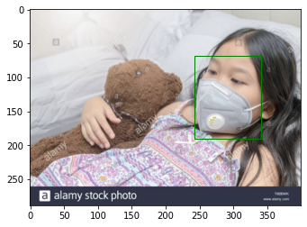
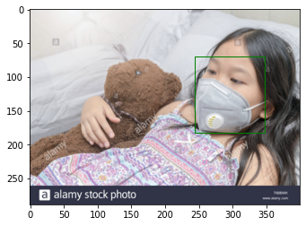

<!DOCTYPE html>

<html>
  <head>
    <meta charset="utf-8" />
    <meta name="viewport" content="width=device-width, initial-scale=1.0" />
    <title>5. 성능 향상을 위한 방법 &#8212; PseudoLab Tutorial Book</title>
    
  <link rel="stylesheet" href="../../_static/css/index.73d71520a4ca3b99cfee5594769eaaae.css">

    
  <link rel="stylesheet"
    href="../../_static/vendor/fontawesome/5.13.0/css/all.min.css">
  <link rel="preload" as="font" type="font/woff2" crossorigin
    href="../../_static/vendor/fontawesome/5.13.0/webfonts/fa-solid-900.woff2">
  <link rel="preload" as="font" type="font/woff2" crossorigin
    href="../../_static/vendor/fontawesome/5.13.0/webfonts/fa-brands-400.woff2">

    
      
  <link rel="stylesheet"
    href="../../_static/vendor/open-sans_all/1.44.1/index.css">
  <link rel="stylesheet"
    href="../../_static/vendor/lato_latin-ext/1.44.1/index.css">

    
    <link rel="stylesheet" href="../../_static/pygments.css" type="text/css" />
    <link rel="stylesheet" href="../../_static/sphinx-book-theme.40e2e510f6b7d1648584402491bb10fe.css" type="text/css" />
    <link rel="stylesheet" type="text/css" href="../../_static/togglebutton.css" />
    <link rel="stylesheet" type="text/css" href="../../_static/copybutton.css" />
    <link rel="stylesheet" type="text/css" href="../../_static/mystnb.css" />
    <link rel="stylesheet" type="text/css" href="../../_static/sphinx-thebe.css" />
    <link rel="stylesheet" type="text/css" href="../../_static/panels-main.c949a650a448cc0ae9fd3441c0e17fb0.css" />
    <link rel="stylesheet" type="text/css" href="../../_static/panels-variables.06eb56fa6e07937060861dad626602ad.css" />
    
  <link rel="preload" as="script" href="../../_static/js/index.3da636dd464baa7582d2.js">

    <script id="documentation_options" data-url_root="../../" src="../../_static/documentation_options.js"></script>
    <script src="../../_static/jquery.js"></script>
    <script src="../../_static/underscore.js"></script>
    <script src="../../_static/doctools.js"></script>
    <script src="../../_static/language_data.js"></script>
    <script src="../../_static/togglebutton.js"></script>
    <script src="../../_static/clipboard.min.js"></script>
    <script src="../../_static/copybutton.js"></script>
    <script >var togglebuttonSelector = '.toggle, .admonition.dropdown, .tag_hide_input div.cell_input, .tag_hide-input div.cell_input, .tag_hide_output div.cell_output, .tag_hide-output div.cell_output, .tag_hide_cell.cell, .tag_hide-cell.cell';</script>
    <script src="../../_static/sphinx-book-theme.d31b09fe5c1d09cb49b26a786de4a05d.js"></script>
    <script async="async" src="https://unpkg.com/thebelab@latest/lib/index.js"></script>
    <script >
        const thebe_selector = ".thebe"
        const thebe_selector_input = "pre"
        const thebe_selector_output = ".output"
    </script>
    <script async="async" src="../../_static/sphinx-thebe.js"></script>
    <link rel="index" title="Index" href="../../genindex.html" />
    <link rel="search" title="Search" href="../../search.html" />
    <link rel="prev" title="4. 데이터 모델링" href="Ch4_%EB%8D%B0%EC%9D%B4%ED%84%B0%20%EB%AA%A8%EB%8D%B8%EB%A7%81.html" />

    <meta name="viewport" content="width=device-width, initial-scale=1" />
    <meta name="docsearch:language" content="en" />


  </head>
  <body data-spy="scroll" data-target="#bd-toc-nav" data-offset="80">
    

    <div class="container-xl">
      <div class="row">
          
<div class="col-12 col-md-3 bd-sidebar site-navigation show" id="site-navigation">
    
        <div class="navbar-brand-box">
<a class="navbar-brand text-wrap" href="../../index.html">
  
  
  
  
  <h1 class="site-logo" id="site-title">PseudoLab Tutorial Book</h1>
  
</a>
</div><form class="bd-search d-flex align-items-center" action="../../search.html" method="get">
  <i class="icon fas fa-search"></i>
  <input type="search" class="form-control" name="q" id="search-input" placeholder="Search this book..." aria-label="Search this book..." autocomplete="off" >
</form>
<nav class="bd-links" id="bd-docs-nav" aria-label="Main navigation">
    <ul class="current nav sidenav_l1">
 <li class="toctree-l1">
  <a class="reference internal" href="Ch1_Object%20Detection.html">
   1. 객체 탐지(Object Detection)
  </a>
 </li>
 <li class="toctree-l1">
  <a class="reference internal" href="Ch2_%EB%8D%B0%EC%9D%B4%ED%84%B0%20%ED%83%90%EC%83%89.html">
   2. 데이터 탐색
  </a>
 </li>
 <li class="toctree-l1">
  <a class="reference internal" href="Ch3_%EB%8D%B0%EC%9D%B4%ED%84%B0%20%EC%A0%84%EC%B2%98%EB%A6%AC.html">
   3. 데이터 전처리
  </a>
 </li>
 <li class="toctree-l1">
  <a class="reference internal" href="Ch4_%EB%8D%B0%EC%9D%B4%ED%84%B0%20%EB%AA%A8%EB%8D%B8%EB%A7%81.html">
   4. 데이터 모델링
  </a>
 </li>
 <li class="toctree-l1 current active">
  <a class="current reference internal" href="#">
   5. 성능 향상을 위한 방법
  </a>
 </li>
</ul>

</nav> <!-- To handle the deprecated key -->

<div class="navbar_extra_footer">
  Powered by <a href="https://jupyterbook.org">Jupyter Book</a>
</div>

</div>


          


          
<main class="col py-md-3 pl-md-4 bd-content overflow-auto" role="main">
    
    <div class="row topbar fixed-top container-xl">
    <div class="col-12 col-md-3 bd-topbar-whitespace site-navigation show">
    </div>
    <div class="col pl-2 topbar-main">
        
        <button id="navbar-toggler" class="navbar-toggler ml-0" type="button" data-toggle="collapse"
            data-toggle="tooltip" data-placement="bottom" data-target=".site-navigation" aria-controls="navbar-menu"
            aria-expanded="true" aria-label="Toggle navigation" aria-controls="site-navigation"
            title="Toggle navigation" data-toggle="tooltip" data-placement="left">
            <i class="fas fa-bars"></i>
            <i class="fas fa-arrow-left"></i>
            <i class="fas fa-arrow-up"></i>
        </button>
        
        
<div class="dropdown-buttons-trigger">
    <button id="dropdown-buttons-trigger" class="btn btn-secondary topbarbtn" aria-label="Download this page"><i
            class="fas fa-download"></i></button>

    <div class="dropdown-buttons">
        <!-- ipynb file if we had a myst markdown file -->
        
        <!-- Download raw file -->
        <a class="dropdown-buttons" href="../../_sources/docs/object_detection/Ch5_성능 향상을 위한 방법.md"><button type="button"
                class="btn btn-secondary topbarbtn" title="Download source file" data-toggle="tooltip"
                data-placement="left">.md</button></a>
        <!-- Download PDF via print -->
        <button type="button" id="download-print" class="btn btn-secondary topbarbtn" title="Print to PDF"
            onClick="window.print()" data-toggle="tooltip" data-placement="left">.pdf</button>
    </div>
</div>

        <!-- Source interaction buttons -->


        <!-- Full screen (wrap in <a> to have style consistency -->
        <a class="full-screen-button"><button type="button" class="btn btn-secondary topbarbtn" data-toggle="tooltip"
                data-placement="bottom" onclick="toggleFullScreen()" aria-label="Fullscreen mode"
                title="Fullscreen mode"><i
                    class="fas fa-expand"></i></button></a>

        <!-- Launch buttons -->

    </div>

    <!-- Table of contents -->
    <div class="d-none d-md-block col-md-2 bd-toc show">
        
        <div class="tocsection onthispage pt-5 pb-3">
            <i class="fas fa-list"></i> Contents
        </div>
        <nav id="bd-toc-nav">
            <ul class="nav section-nav flex-column">
 <li class="toc-h2 nav-item toc-entry">
  <a class="reference internal nav-link" href="#id2">
   5.2 데이터 분리
  </a>
 </li>
 <li class="toc-h2 nav-item toc-entry">
  <a class="reference internal nav-link" href="#id3">
   5.3 데이터셋 클래스 정의
  </a>
 </li>
</ul>

        </nav>
        
    </div>
</div>
    <div id="main-content" class="row">
        <div class="col-12 col-md-9 pl-md-3 pr-md-0">
        
              <div>
                
  <div class="section" id="id1">
<h1>5. 성능 향상을 위한 방법<a class="headerlink" href="#id1" title="Permalink to this headline">¶</a></h1>
<p>이번 장에서는 2-stage-method인 Faster R-CNN으로 객체 탐지를 해보도록 하겠습니다.</p>
<p>실험에 앞서 Google Colab에서는 랜덤 GPU를 할당하고 있기 때문에 메모리 부족현상이 일어날 수 있습니다.</p>
<p>먼저 GPU를 확인 후에 메모리가 충분할 경우 실험을 하시길 권장합니다.
(런타임을 초기화할 경우 새로운 GPU를 할당받으실 수 있습니다)</p>
<div class="highlight-python notranslate"><div class="highlight"><pre><span></span><span class="kn">import</span> <span class="nn">torch</span>

<span class="k">if</span> <span class="n">torch</span><span class="o">.</span><span class="n">cuda</span><span class="o">.</span><span class="n">is_available</span><span class="p">():</span>    
    <span class="n">device</span> <span class="o">=</span> <span class="n">torch</span><span class="o">.</span><span class="n">device</span><span class="p">(</span><span class="s2">&quot;cuda&quot;</span><span class="p">)</span>
    <span class="nb">print</span><span class="p">(</span><span class="s1">&#39;There are </span><span class="si">%d</span><span class="s1"> GPU(s) available.&#39;</span> <span class="o">%</span> <span class="n">torch</span><span class="o">.</span><span class="n">cuda</span><span class="o">.</span><span class="n">device_count</span><span class="p">())</span>
    <span class="nb">print</span><span class="p">(</span><span class="s1">&#39;We will use the GPU:&#39;</span><span class="p">,</span> <span class="n">torch</span><span class="o">.</span><span class="n">cuda</span><span class="o">.</span><span class="n">get_device_name</span><span class="p">(</span><span class="mi">0</span><span class="p">))</span>

<span class="k">else</span><span class="p">:</span>
    <span class="nb">print</span><span class="p">(</span><span class="s1">&#39;No GPU available, using the CPU instead.&#39;</span><span class="p">)</span>
    <span class="n">device</span> <span class="o">=</span> <span class="n">torch</span><span class="o">.</span><span class="n">device</span><span class="p">(</span><span class="s2">&quot;cpu&quot;</span><span class="p">)</span>
</pre></div>
</div>
<div class="highlight-none notranslate"><div class="highlight"><pre><span></span>There are 1 GPU(s) available.
We will use the GPU: Tesla T4
</pre></div>
</div>
<p>##5.1 데이터 불러오기
2.2절에서 보았듯이 가짜연구소 API를 활용하여 데이터를 다운받고 압축 파일을 풀어줍니다.</p>
<div class="highlight-python notranslate"><div class="highlight"><pre><span></span>!git clone https://github.com/Pseudo-Lab/Tutorial-Book-DataLoader
!python Tutorial-Book-DataLoader/PL_data_loader.py --data FaceMaskDetection
!unzip -q Face\ Mask\ Detection.zip
</pre></div>
</div>
<div class="highlight-none notranslate"><div class="highlight"><pre><span></span>Cloning into &#39;Tutorial-Book-DataLoader&#39;...
remote: Enumerating objects: 9, done.
remote: Counting objects: 100% (9/9), done.
remote: Compressing objects: 100% (8/8), done.
remote: Total 9 (delta 1), reused 2 (delta 0), pack-reused 0
Unpacking objects: 100% (9/9), done.
Face Mask Detection.zip is done!
</pre></div>
</div>
<div class="section" id="id2">
<h2>5.2 데이터 분리<a class="headerlink" href="#id2" title="Permalink to this headline">¶</a></h2>
<p>먼저 이전장에서 사용했던 패키지들과 모델에 필요한 패키지를 불러오겠습니다.</p>
<p><code class="docutils literal notranslate"><span class="pre">torchvision</span></code>은 이미지 처리를 하기 위해 사용되며 데이터셋에 관한 패키지와 모델에 관한 패키지가 내장되어 있습니다.</p>
<div class="highlight-python notranslate"><div class="highlight"><pre><span></span><span class="kn">import</span> <span class="nn">os</span>
<span class="kn">import</span> <span class="nn">numpy</span> <span class="k">as</span> <span class="nn">np</span>
<span class="kn">import</span> <span class="nn">matplotlib.patches</span> <span class="k">as</span> <span class="nn">patches</span>
<span class="kn">import</span> <span class="nn">matplotlib.pyplot</span> <span class="k">as</span> <span class="nn">plt</span>
<span class="kn">from</span> <span class="nn">bs4</span> <span class="kn">import</span> <span class="n">BeautifulSoup</span>
<span class="kn">from</span> <span class="nn">PIL</span> <span class="kn">import</span> <span class="n">Image</span>
<span class="kn">import</span> <span class="nn">torchvision</span>
<span class="kn">from</span> <span class="nn">torchvision</span> <span class="kn">import</span> <span class="n">transforms</span><span class="p">,</span> <span class="n">datasets</span><span class="p">,</span> <span class="n">models</span>
<span class="kn">from</span> <span class="nn">torchvision.models.detection.faster_rcnn</span> <span class="kn">import</span> <span class="n">FastRCNNPredictor</span>
<span class="kn">import</span> <span class="nn">time</span>
</pre></div>
</div>
<p>그리고 3.4절과 같이 총 853장의 images와 annotations을 학습 데이터와 시험 데이터로 분리합니다.</p>
<p>test 폴더를 만들어 8:2의 비율로 시험 데이터를 따로 옮겨줍니다.</p>
<div class="highlight-python notranslate"><div class="highlight"><pre><span></span><span class="nb">print</span><span class="p">(</span><span class="nb">len</span><span class="p">(</span><span class="n">os</span><span class="o">.</span><span class="n">listdir</span><span class="p">(</span><span class="s1">&#39;annotations&#39;</span><span class="p">)))</span>
<span class="nb">print</span><span class="p">(</span><span class="nb">len</span><span class="p">(</span><span class="n">os</span><span class="o">.</span><span class="n">listdir</span><span class="p">(</span><span class="s1">&#39;images&#39;</span><span class="p">)))</span>
</pre></div>
</div>
<div class="highlight-none notranslate"><div class="highlight"><pre><span></span>853
853
</pre></div>
</div>
<div class="highlight-python notranslate"><div class="highlight"><pre><span></span>!mkdir test_images
!mkdir test_annotations
</pre></div>
</div>
<div class="highlight-python notranslate"><div class="highlight"><pre><span></span><span class="kn">import</span> <span class="nn">shutil</span>

<span class="k">for</span> <span class="n">img</span> <span class="ow">in</span> <span class="nb">sorted</span><span class="p">(</span><span class="n">os</span><span class="o">.</span><span class="n">listdir</span><span class="p">(</span><span class="s1">&#39;images&#39;</span><span class="p">))[</span><span class="o">-</span><span class="mi">170</span><span class="p">:]:</span>
    <span class="n">shutil</span><span class="o">.</span><span class="n">move</span><span class="p">(</span><span class="s1">&#39;images/&#39;</span><span class="o">+</span><span class="n">img</span><span class="p">,</span> <span class="s1">&#39;test_images/&#39;</span><span class="o">+</span><span class="n">img</span><span class="p">)</span>

<span class="k">for</span> <span class="n">annot</span> <span class="ow">in</span> <span class="nb">sorted</span><span class="p">(</span><span class="n">os</span><span class="o">.</span><span class="n">listdir</span><span class="p">(</span><span class="s1">&#39;annotations&#39;</span><span class="p">))[</span><span class="o">-</span><span class="mi">170</span><span class="p">:]:</span>
    <span class="n">shutil</span><span class="o">.</span><span class="n">move</span><span class="p">(</span><span class="s1">&#39;annotations/&#39;</span><span class="o">+</span><span class="n">annot</span><span class="p">,</span> <span class="s1">&#39;test_annotations/&#39;</span><span class="o">+</span><span class="n">annot</span><span class="p">)</span>
</pre></div>
</div>
<p>위의 코드에서 shutil 패키지는 파일과 폴더 관련한 이동, 복사 작업을 할 때 사용합니다.</p>
<div class="highlight-python notranslate"><div class="highlight"><pre><span></span><span class="nb">print</span><span class="p">(</span><span class="nb">len</span><span class="p">(</span><span class="n">os</span><span class="o">.</span><span class="n">listdir</span><span class="p">(</span><span class="s1">&#39;annotations&#39;</span><span class="p">)))</span>
<span class="nb">print</span><span class="p">(</span><span class="nb">len</span><span class="p">(</span><span class="n">os</span><span class="o">.</span><span class="n">listdir</span><span class="p">(</span><span class="s1">&#39;images&#39;</span><span class="p">)))</span>
<span class="nb">print</span><span class="p">(</span><span class="nb">len</span><span class="p">(</span><span class="n">os</span><span class="o">.</span><span class="n">listdir</span><span class="p">(</span><span class="s1">&#39;test_annotations&#39;</span><span class="p">)))</span>
<span class="nb">print</span><span class="p">(</span><span class="nb">len</span><span class="p">(</span><span class="n">os</span><span class="o">.</span><span class="n">listdir</span><span class="p">(</span><span class="s1">&#39;test_images&#39;</span><span class="p">)))</span>
</pre></div>
</div>
<div class="highlight-none notranslate"><div class="highlight"><pre><span></span>683
683
170
170
</pre></div>
</div>
</div>
<div class="section" id="id3">
<h2>5.3 데이터셋 클래스 정의<a class="headerlink" href="#id3" title="Permalink to this headline">¶</a></h2>
<p>2.3절과 마찬가지로 바운딩 박스를 위한 함수들을 정의해줍니다.</p>
<div class="highlight-python notranslate"><div class="highlight"><pre><span></span><span class="k">def</span> <span class="nf">generate_box</span><span class="p">(</span><span class="n">obj</span><span class="p">):</span>
    
    <span class="n">xmin</span> <span class="o">=</span> <span class="nb">int</span><span class="p">(</span><span class="n">obj</span><span class="o">.</span><span class="n">find</span><span class="p">(</span><span class="s1">&#39;xmin&#39;</span><span class="p">)</span><span class="o">.</span><span class="n">text</span><span class="p">)</span>
    <span class="n">ymin</span> <span class="o">=</span> <span class="nb">int</span><span class="p">(</span><span class="n">obj</span><span class="o">.</span><span class="n">find</span><span class="p">(</span><span class="s1">&#39;ymin&#39;</span><span class="p">)</span><span class="o">.</span><span class="n">text</span><span class="p">)</span>
    <span class="n">xmax</span> <span class="o">=</span> <span class="nb">int</span><span class="p">(</span><span class="n">obj</span><span class="o">.</span><span class="n">find</span><span class="p">(</span><span class="s1">&#39;xmax&#39;</span><span class="p">)</span><span class="o">.</span><span class="n">text</span><span class="p">)</span>
    <span class="n">ymax</span> <span class="o">=</span> <span class="nb">int</span><span class="p">(</span><span class="n">obj</span><span class="o">.</span><span class="n">find</span><span class="p">(</span><span class="s1">&#39;ymax&#39;</span><span class="p">)</span><span class="o">.</span><span class="n">text</span><span class="p">)</span>
    
    <span class="k">return</span> <span class="p">[</span><span class="n">xmin</span><span class="p">,</span> <span class="n">ymin</span><span class="p">,</span> <span class="n">xmax</span><span class="p">,</span> <span class="n">ymax</span><span class="p">]</span>

<span class="k">def</span> <span class="nf">generate_label</span><span class="p">(</span><span class="n">obj</span><span class="p">):</span>
    <span class="k">if</span> <span class="n">obj</span><span class="o">.</span><span class="n">find</span><span class="p">(</span><span class="s1">&#39;name&#39;</span><span class="p">)</span><span class="o">.</span><span class="n">text</span> <span class="o">==</span> <span class="s2">&quot;with_mask&quot;</span><span class="p">:</span>
        <span class="k">return</span> <span class="mi">1</span>
    <span class="k">elif</span> <span class="n">obj</span><span class="o">.</span><span class="n">find</span><span class="p">(</span><span class="s1">&#39;name&#39;</span><span class="p">)</span><span class="o">.</span><span class="n">text</span> <span class="o">==</span> <span class="s2">&quot;mask_weared_incorrect&quot;</span><span class="p">:</span>
        <span class="k">return</span> <span class="mi">2</span>
    <span class="k">return</span> <span class="mi">0</span>

<span class="k">def</span> <span class="nf">generate_target</span><span class="p">(</span><span class="n">image_id</span><span class="p">,</span> <span class="n">file</span><span class="p">):</span> 
    <span class="k">with</span> <span class="nb">open</span><span class="p">(</span><span class="n">file</span><span class="p">)</span> <span class="k">as</span> <span class="n">f</span><span class="p">:</span>
        <span class="n">data</span> <span class="o">=</span> <span class="n">f</span><span class="o">.</span><span class="n">read</span><span class="p">()</span>
        <span class="n">soup</span> <span class="o">=</span> <span class="n">BeautifulSoup</span><span class="p">(</span><span class="n">data</span><span class="p">,</span> <span class="s1">&#39;html.parser&#39;</span><span class="p">)</span>
        <span class="n">objects</span> <span class="o">=</span> <span class="n">soup</span><span class="o">.</span><span class="n">find_all</span><span class="p">(</span><span class="s1">&#39;object&#39;</span><span class="p">)</span>

        <span class="n">num_objs</span> <span class="o">=</span> <span class="nb">len</span><span class="p">(</span><span class="n">objects</span><span class="p">)</span>

        <span class="c1"># Bounding boxes for objects</span>
        <span class="c1"># In coco format, bbox = [xmin, ymin, width, height]</span>
        <span class="c1"># In pytorch, the input should be [xmin, ymin, xmax, ymax]</span>
        <span class="n">boxes</span> <span class="o">=</span> <span class="p">[]</span>
        <span class="n">labels</span> <span class="o">=</span> <span class="p">[]</span>
        <span class="k">for</span> <span class="n">i</span> <span class="ow">in</span> <span class="n">objects</span><span class="p">:</span>
            <span class="n">boxes</span><span class="o">.</span><span class="n">append</span><span class="p">(</span><span class="n">generate_box</span><span class="p">(</span><span class="n">i</span><span class="p">))</span>
            <span class="n">labels</span><span class="o">.</span><span class="n">append</span><span class="p">(</span><span class="n">generate_label</span><span class="p">(</span><span class="n">i</span><span class="p">))</span>
        <span class="n">boxes</span> <span class="o">=</span> <span class="n">torch</span><span class="o">.</span><span class="n">as_tensor</span><span class="p">(</span><span class="n">boxes</span><span class="p">,</span> <span class="n">dtype</span><span class="o">=</span><span class="n">torch</span><span class="o">.</span><span class="n">float32</span><span class="p">)</span>
        <span class="c1"># Labels (In my case, I only one class: target class or background)</span>
        <span class="n">labels</span> <span class="o">=</span> <span class="n">torch</span><span class="o">.</span><span class="n">as_tensor</span><span class="p">(</span><span class="n">labels</span><span class="p">,</span> <span class="n">dtype</span><span class="o">=</span><span class="n">torch</span><span class="o">.</span><span class="n">int64</span><span class="p">)</span>
        <span class="c1"># Tensorise img_id</span>
        <span class="n">img_id</span> <span class="o">=</span> <span class="n">torch</span><span class="o">.</span><span class="n">tensor</span><span class="p">([</span><span class="n">image_id</span><span class="p">])</span>
        <span class="c1"># Annotation is in dictionary format</span>
        <span class="n">target</span> <span class="o">=</span> <span class="p">{}</span>
        <span class="n">target</span><span class="p">[</span><span class="s2">&quot;boxes&quot;</span><span class="p">]</span> <span class="o">=</span> <span class="n">boxes</span>
        <span class="n">target</span><span class="p">[</span><span class="s2">&quot;labels&quot;</span><span class="p">]</span> <span class="o">=</span> <span class="n">labels</span>
        <span class="n">target</span><span class="p">[</span><span class="s2">&quot;image_id&quot;</span><span class="p">]</span> <span class="o">=</span> <span class="n">img_id</span>
        
        <span class="k">return</span> <span class="n">target</span>
</pre></div>
</div>
<p>또한 4.3절처럼 데이터셋 클래스와 데이터 로더를 정의해줍니다.</p>
<p>데이터셋은  <code class="docutils literal notranslate"><span class="pre">torch.utils.data.DataLoader</span></code> 함수를 통해 배치 사이즈는 4로 지정하여 불러오겠습니다.</p>
<p>배치 사이즈는 개인의 메모리 크기에 따라 자유롭게 설정하면 됩니다.</p>
<div class="highlight-python notranslate"><div class="highlight"><pre><span></span><span class="k">class</span> <span class="nc">MaskDataset</span><span class="p">(</span><span class="nb">object</span><span class="p">):</span>
    <span class="k">def</span> <span class="fm">__init__</span><span class="p">(</span><span class="bp">self</span><span class="p">,</span> <span class="n">transforms</span><span class="p">,</span> <span class="n">path</span><span class="p">):</span>
        <span class="sd">&#39;&#39;&#39;</span>
<span class="sd">        path: path to train folder or test folder</span>
<span class="sd">        &#39;&#39;&#39;</span>
        <span class="c1"># transform module과 img path 경로를 정의</span>
        <span class="bp">self</span><span class="o">.</span><span class="n">transforms</span> <span class="o">=</span> <span class="n">transforms</span>
        <span class="c1"># load all image files, sorting them to</span>
        <span class="c1"># ensure that they are aligned</span>
        <span class="bp">self</span><span class="o">.</span><span class="n">path</span> <span class="o">=</span> <span class="n">path</span>
        <span class="bp">self</span><span class="o">.</span><span class="n">imgs</span> <span class="o">=</span> <span class="nb">list</span><span class="p">(</span><span class="nb">sorted</span><span class="p">(</span><span class="n">os</span><span class="o">.</span><span class="n">listdir</span><span class="p">(</span><span class="bp">self</span><span class="o">.</span><span class="n">path</span><span class="p">)))</span>


    <span class="k">def</span> <span class="fm">__getitem__</span><span class="p">(</span><span class="bp">self</span><span class="p">,</span> <span class="n">idx</span><span class="p">):</span> <span class="c1">#special method</span>
        <span class="c1"># load images ad masks</span>
        <span class="n">file_image</span> <span class="o">=</span> <span class="bp">self</span><span class="o">.</span><span class="n">imgs</span><span class="p">[</span><span class="n">idx</span><span class="p">]</span>
        <span class="n">file_label</span> <span class="o">=</span> <span class="bp">self</span><span class="o">.</span><span class="n">imgs</span><span class="p">[</span><span class="n">idx</span><span class="p">][:</span><span class="o">-</span><span class="mi">3</span><span class="p">]</span> <span class="o">+</span> <span class="s1">&#39;xml&#39;</span>
        <span class="n">img_path</span> <span class="o">=</span> <span class="n">os</span><span class="o">.</span><span class="n">path</span><span class="o">.</span><span class="n">join</span><span class="p">(</span><span class="bp">self</span><span class="o">.</span><span class="n">path</span><span class="p">,</span> <span class="n">file_image</span><span class="p">)</span>
        
        <span class="k">if</span> <span class="s1">&#39;test&#39;</span> <span class="ow">in</span> <span class="bp">self</span><span class="o">.</span><span class="n">path</span><span class="p">:</span>
            <span class="n">label_path</span> <span class="o">=</span> <span class="n">os</span><span class="o">.</span><span class="n">path</span><span class="o">.</span><span class="n">join</span><span class="p">(</span><span class="s2">&quot;test_annotations/&quot;</span><span class="p">,</span> <span class="n">file_label</span><span class="p">)</span>
        <span class="k">else</span><span class="p">:</span>
            <span class="n">label_path</span> <span class="o">=</span> <span class="n">os</span><span class="o">.</span><span class="n">path</span><span class="o">.</span><span class="n">join</span><span class="p">(</span><span class="s2">&quot;annotations/&quot;</span><span class="p">,</span> <span class="n">file_label</span><span class="p">)</span>

        <span class="n">img</span> <span class="o">=</span> <span class="n">Image</span><span class="o">.</span><span class="n">open</span><span class="p">(</span><span class="n">img_path</span><span class="p">)</span><span class="o">.</span><span class="n">convert</span><span class="p">(</span><span class="s2">&quot;RGB&quot;</span><span class="p">)</span>
        <span class="c1">#Generate Label</span>
        <span class="n">target</span> <span class="o">=</span> <span class="n">generate_target</span><span class="p">(</span><span class="n">idx</span><span class="p">,</span> <span class="n">label_path</span><span class="p">)</span>
        
        <span class="k">if</span> <span class="bp">self</span><span class="o">.</span><span class="n">transforms</span> <span class="ow">is</span> <span class="ow">not</span> <span class="kc">None</span><span class="p">:</span>
            <span class="n">img</span> <span class="o">=</span> <span class="bp">self</span><span class="o">.</span><span class="n">transforms</span><span class="p">(</span><span class="n">img</span><span class="p">)</span>

        <span class="k">return</span> <span class="n">img</span><span class="p">,</span> <span class="n">target</span>

    <span class="k">def</span> <span class="fm">__len__</span><span class="p">(</span><span class="bp">self</span><span class="p">):</span> <span class="c1"># len() 적용가능케 함, special method</span>
        <span class="k">return</span> <span class="nb">len</span><span class="p">(</span><span class="bp">self</span><span class="o">.</span><span class="n">imgs</span><span class="p">)</span>

<span class="n">data_transform</span> <span class="o">=</span> <span class="n">transforms</span><span class="o">.</span><span class="n">Compose</span><span class="p">([</span>  <span class="c1"># transforms.Compose : list 내의 작업을 연달아 할 수 있게 호출하는 클래스</span>
        <span class="n">transforms</span><span class="o">.</span><span class="n">ToTensor</span><span class="p">()</span> <span class="c1"># ToTensor : numpy 이미지에서 torch 이미지로 변경</span>
    <span class="p">])</span>

<span class="k">def</span> <span class="nf">collate_fn</span><span class="p">(</span><span class="n">batch</span><span class="p">):</span>
    <span class="k">return</span> <span class="nb">tuple</span><span class="p">(</span><span class="nb">zip</span><span class="p">(</span><span class="o">*</span><span class="n">batch</span><span class="p">))</span>

<span class="n">dataset</span> <span class="o">=</span> <span class="n">MaskDataset</span><span class="p">(</span><span class="n">data_transform</span><span class="p">,</span> <span class="s1">&#39;images/&#39;</span><span class="p">)</span>
<span class="n">test_dataset</span> <span class="o">=</span> <span class="n">MaskDataset</span><span class="p">(</span><span class="n">data_transform</span><span class="p">,</span> <span class="s1">&#39;test_images/&#39;</span><span class="p">)</span>

<span class="n">data_loader</span> <span class="o">=</span> <span class="n">torch</span><span class="o">.</span><span class="n">utils</span><span class="o">.</span><span class="n">data</span><span class="o">.</span><span class="n">DataLoader</span><span class="p">(</span><span class="n">dataset</span><span class="p">,</span> <span class="n">batch_size</span><span class="o">=</span><span class="mi">4</span><span class="p">,</span> <span class="n">collate_fn</span><span class="o">=</span><span class="n">collate_fn</span><span class="p">)</span>
<span class="n">test_data_loader</span> <span class="o">=</span> <span class="n">torch</span><span class="o">.</span><span class="n">utils</span><span class="o">.</span><span class="n">data</span><span class="o">.</span><span class="n">DataLoader</span><span class="p">(</span><span class="n">test_dataset</span><span class="p">,</span> <span class="n">batch_size</span><span class="o">=</span><span class="mi">4</span><span class="p">,</span> <span class="n">collate_fn</span><span class="o">=</span><span class="n">collate_fn</span><span class="p">)</span>
</pre></div>
</div>
<p>##5.4 모델 불러오기
<code class="docutils literal notranslate"><span class="pre">torchvision.models.detection</span></code>에서는 Faster R-CNN API(<code class="docutils literal notranslate"><span class="pre">torchvision.models.detection.fasterrcnn_resnet50_fpn</span></code>)를 제공하고 있어 쉽게 구현이 가능합니다.</p>
<p>이는 COCO 데이터셋을 ResNet50으로 pre-trained한 모델을 제공하고 있으며, <code class="docutils literal notranslate"><span class="pre">pretrained=True/False</span></code>로 설정할 수 있습니다.</p>
<p>그리고 이후 모델을 불러올 때 <code class="docutils literal notranslate"><span class="pre">num_classes</span></code>에 원하는 클래스 개수를 설정하고 모델을 사용하면 됩니다.</p>
<p>이렇게 간단하게 Faster R-CNN 모델을 실험해볼 수 있습니다.</p>
<div class="highlight-python notranslate"><div class="highlight"><pre><span></span><span class="k">def</span> <span class="nf">get_model_instance_segmentation</span><span class="p">(</span><span class="n">num_classes</span><span class="p">):</span>
  
    <span class="n">model</span> <span class="o">=</span> <span class="n">torchvision</span><span class="o">.</span><span class="n">models</span><span class="o">.</span><span class="n">detection</span><span class="o">.</span><span class="n">fasterrcnn_resnet50_fpn</span><span class="p">(</span><span class="n">pretrained</span><span class="o">=</span><span class="kc">True</span><span class="p">)</span>
    <span class="n">in_features</span> <span class="o">=</span> <span class="n">model</span><span class="o">.</span><span class="n">roi_heads</span><span class="o">.</span><span class="n">box_predictor</span><span class="o">.</span><span class="n">cls_score</span><span class="o">.</span><span class="n">in_features</span>
    <span class="n">model</span><span class="o">.</span><span class="n">roi_heads</span><span class="o">.</span><span class="n">box_predictor</span> <span class="o">=</span> <span class="n">FastRCNNPredictor</span><span class="p">(</span><span class="n">in_features</span><span class="p">,</span> <span class="n">num_classes</span><span class="p">)</span>

    <span class="k">return</span> <span class="n">model</span>
</pre></div>
</div>
<p>##5.5 전이학습
그럼 Face Mask Detection에 적용해보도록 하겠습니다.</p>
<p>Face Mask Detection 데이터셋은 3개의 클래스로 이루어져 있기 때문에 <code class="docutils literal notranslate"><span class="pre">num_classes</span></code>를 3으로 설정한 후 모델을 불러옵니다.</p>
<p>GPU를 사용할 수 있는 환경이라면 device로 지정하여 불러온 모델을 GPU에 보내줍니다.</p>
<div class="highlight-python notranslate"><div class="highlight"><pre><span></span><span class="n">model</span> <span class="o">=</span> <span class="n">get_model_instance_segmentation</span><span class="p">(</span><span class="mi">3</span><span class="p">)</span>

<span class="n">device</span> <span class="o">=</span> <span class="n">torch</span><span class="o">.</span><span class="n">device</span><span class="p">(</span><span class="s1">&#39;cuda&#39;</span><span class="p">)</span> <span class="k">if</span> <span class="n">torch</span><span class="o">.</span><span class="n">cuda</span><span class="o">.</span><span class="n">is_available</span><span class="p">()</span> <span class="k">else</span> <span class="n">torch</span><span class="o">.</span><span class="n">device</span><span class="p">(</span><span class="s1">&#39;cpu&#39;</span><span class="p">)</span> 
<span class="n">model</span><span class="o">.</span><span class="n">to</span><span class="p">(</span><span class="n">device</span><span class="p">)</span>
</pre></div>
</div>
<div class="highlight-none notranslate"><div class="highlight"><pre><span></span>Downloading: &quot;https://download.pytorch.org/models/fasterrcnn_resnet50_fpn_coco-258fb6c6.pth&quot; to /root/.cache/torch/hub/checkpoints/fasterrcnn_resnet50_fpn_coco-258fb6c6.pth


HBox(children=(FloatProgress(value=0.0, max=167502836.0), HTML(value=&#39;&#39;)))


FasterRCNN(
  (transform): GeneralizedRCNNTransform(
      Normalize(mean=[0.485, 0.456, 0.406], std=[0.229, 0.224, 0.225])
      Resize(min_size=(800,), max_size=1333, mode=&#39;bilinear&#39;)
  )
  (backbone): BackboneWithFPN(
    (body): IntermediateLayerGetter(
      (conv1): Conv2d(3, 64, kernel_size=(7, 7), stride=(2, 2), padding=(3, 3), bias=False)
      (bn1): FrozenBatchNorm2d(64)
      (relu): ReLU(inplace=True)
      (maxpool): MaxPool2d(kernel_size=3, stride=2, padding=1, dilation=1, ceil_mode=False)
      (layer1): Sequential(
        (0): Bottleneck(
          (conv1): Conv2d(64, 64, kernel_size=(1, 1), stride=(1, 1), bias=False)
          (bn1): FrozenBatchNorm2d(64)
          (conv2): Conv2d(64, 64, kernel_size=(3, 3), stride=(1, 1), padding=(1, 1), bias=False)
          (bn2): FrozenBatchNorm2d(64)
          (conv3): Conv2d(64, 256, kernel_size=(1, 1), stride=(1, 1), bias=False)
          (bn3): FrozenBatchNorm2d(256)
          (relu): ReLU(inplace=True)
          (downsample): Sequential(
            (0): Conv2d(64, 256, kernel_size=(1, 1), stride=(1, 1), bias=False)
            (1): FrozenBatchNorm2d(256)
          )
        )
        (1): Bottleneck(
          (conv1): Conv2d(256, 64, kernel_size=(1, 1), stride=(1, 1), bias=False)
          (bn1): FrozenBatchNorm2d(64)
          (conv2): Conv2d(64, 64, kernel_size=(3, 3), stride=(1, 1), padding=(1, 1), bias=False)
          (bn2): FrozenBatchNorm2d(64)
          (conv3): Conv2d(64, 256, kernel_size=(1, 1), stride=(1, 1), bias=False)
          (bn3): FrozenBatchNorm2d(256)
          (relu): ReLU(inplace=True)
        )
        (2): Bottleneck(
          (conv1): Conv2d(256, 64, kernel_size=(1, 1), stride=(1, 1), bias=False)
          (bn1): FrozenBatchNorm2d(64)
          (conv2): Conv2d(64, 64, kernel_size=(3, 3), stride=(1, 1), padding=(1, 1), bias=False)
          (bn2): FrozenBatchNorm2d(64)
          (conv3): Conv2d(64, 256, kernel_size=(1, 1), stride=(1, 1), bias=False)
          (bn3): FrozenBatchNorm2d(256)
          (relu): ReLU(inplace=True)
        )
      )
      (layer2): Sequential(
        (0): Bottleneck(
          (conv1): Conv2d(256, 128, kernel_size=(1, 1), stride=(1, 1), bias=False)
          (bn1): FrozenBatchNorm2d(128)
          (conv2): Conv2d(128, 128, kernel_size=(3, 3), stride=(2, 2), padding=(1, 1), bias=False)
          (bn2): FrozenBatchNorm2d(128)
          (conv3): Conv2d(128, 512, kernel_size=(1, 1), stride=(1, 1), bias=False)
          (bn3): FrozenBatchNorm2d(512)
          (relu): ReLU(inplace=True)
          (downsample): Sequential(
            (0): Conv2d(256, 512, kernel_size=(1, 1), stride=(2, 2), bias=False)
            (1): FrozenBatchNorm2d(512)
          )
        )
        (1): Bottleneck(
          (conv1): Conv2d(512, 128, kernel_size=(1, 1), stride=(1, 1), bias=False)
          (bn1): FrozenBatchNorm2d(128)
          (conv2): Conv2d(128, 128, kernel_size=(3, 3), stride=(1, 1), padding=(1, 1), bias=False)
          (bn2): FrozenBatchNorm2d(128)
          (conv3): Conv2d(128, 512, kernel_size=(1, 1), stride=(1, 1), bias=False)
          (bn3): FrozenBatchNorm2d(512)
          (relu): ReLU(inplace=True)
        )
        (2): Bottleneck(
          (conv1): Conv2d(512, 128, kernel_size=(1, 1), stride=(1, 1), bias=False)
          (bn1): FrozenBatchNorm2d(128)
          (conv2): Conv2d(128, 128, kernel_size=(3, 3), stride=(1, 1), padding=(1, 1), bias=False)
          (bn2): FrozenBatchNorm2d(128)
          (conv3): Conv2d(128, 512, kernel_size=(1, 1), stride=(1, 1), bias=False)
          (bn3): FrozenBatchNorm2d(512)
          (relu): ReLU(inplace=True)
        )
        (3): Bottleneck(
          (conv1): Conv2d(512, 128, kernel_size=(1, 1), stride=(1, 1), bias=False)
          (bn1): FrozenBatchNorm2d(128)
          (conv2): Conv2d(128, 128, kernel_size=(3, 3), stride=(1, 1), padding=(1, 1), bias=False)
          (bn2): FrozenBatchNorm2d(128)
          (conv3): Conv2d(128, 512, kernel_size=(1, 1), stride=(1, 1), bias=False)
          (bn3): FrozenBatchNorm2d(512)
          (relu): ReLU(inplace=True)
        )
      )
      (layer3): Sequential(
        (0): Bottleneck(
          (conv1): Conv2d(512, 256, kernel_size=(1, 1), stride=(1, 1), bias=False)
          (bn1): FrozenBatchNorm2d(256)
          (conv2): Conv2d(256, 256, kernel_size=(3, 3), stride=(2, 2), padding=(1, 1), bias=False)
          (bn2): FrozenBatchNorm2d(256)
          (conv3): Conv2d(256, 1024, kernel_size=(1, 1), stride=(1, 1), bias=False)
          (bn3): FrozenBatchNorm2d(1024)
          (relu): ReLU(inplace=True)
          (downsample): Sequential(
            (0): Conv2d(512, 1024, kernel_size=(1, 1), stride=(2, 2), bias=False)
            (1): FrozenBatchNorm2d(1024)
          )
        )
        (1): Bottleneck(
          (conv1): Conv2d(1024, 256, kernel_size=(1, 1), stride=(1, 1), bias=False)
          (bn1): FrozenBatchNorm2d(256)
          (conv2): Conv2d(256, 256, kernel_size=(3, 3), stride=(1, 1), padding=(1, 1), bias=False)
          (bn2): FrozenBatchNorm2d(256)
          (conv3): Conv2d(256, 1024, kernel_size=(1, 1), stride=(1, 1), bias=False)
          (bn3): FrozenBatchNorm2d(1024)
          (relu): ReLU(inplace=True)
        )
        (2): Bottleneck(
          (conv1): Conv2d(1024, 256, kernel_size=(1, 1), stride=(1, 1), bias=False)
          (bn1): FrozenBatchNorm2d(256)
          (conv2): Conv2d(256, 256, kernel_size=(3, 3), stride=(1, 1), padding=(1, 1), bias=False)
          (bn2): FrozenBatchNorm2d(256)
          (conv3): Conv2d(256, 1024, kernel_size=(1, 1), stride=(1, 1), bias=False)
          (bn3): FrozenBatchNorm2d(1024)
          (relu): ReLU(inplace=True)
        )
        (3): Bottleneck(
          (conv1): Conv2d(1024, 256, kernel_size=(1, 1), stride=(1, 1), bias=False)
          (bn1): FrozenBatchNorm2d(256)
          (conv2): Conv2d(256, 256, kernel_size=(3, 3), stride=(1, 1), padding=(1, 1), bias=False)
          (bn2): FrozenBatchNorm2d(256)
          (conv3): Conv2d(256, 1024, kernel_size=(1, 1), stride=(1, 1), bias=False)
          (bn3): FrozenBatchNorm2d(1024)
          (relu): ReLU(inplace=True)
        )
        (4): Bottleneck(
          (conv1): Conv2d(1024, 256, kernel_size=(1, 1), stride=(1, 1), bias=False)
          (bn1): FrozenBatchNorm2d(256)
          (conv2): Conv2d(256, 256, kernel_size=(3, 3), stride=(1, 1), padding=(1, 1), bias=False)
          (bn2): FrozenBatchNorm2d(256)
          (conv3): Conv2d(256, 1024, kernel_size=(1, 1), stride=(1, 1), bias=False)
          (bn3): FrozenBatchNorm2d(1024)
          (relu): ReLU(inplace=True)
        )
        (5): Bottleneck(
          (conv1): Conv2d(1024, 256, kernel_size=(1, 1), stride=(1, 1), bias=False)
          (bn1): FrozenBatchNorm2d(256)
          (conv2): Conv2d(256, 256, kernel_size=(3, 3), stride=(1, 1), padding=(1, 1), bias=False)
          (bn2): FrozenBatchNorm2d(256)
          (conv3): Conv2d(256, 1024, kernel_size=(1, 1), stride=(1, 1), bias=False)
          (bn3): FrozenBatchNorm2d(1024)
          (relu): ReLU(inplace=True)
        )
      )
      (layer4): Sequential(
        (0): Bottleneck(
          (conv1): Conv2d(1024, 512, kernel_size=(1, 1), stride=(1, 1), bias=False)
          (bn1): FrozenBatchNorm2d(512)
          (conv2): Conv2d(512, 512, kernel_size=(3, 3), stride=(2, 2), padding=(1, 1), bias=False)
          (bn2): FrozenBatchNorm2d(512)
          (conv3): Conv2d(512, 2048, kernel_size=(1, 1), stride=(1, 1), bias=False)
          (bn3): FrozenBatchNorm2d(2048)
          (relu): ReLU(inplace=True)
          (downsample): Sequential(
            (0): Conv2d(1024, 2048, kernel_size=(1, 1), stride=(2, 2), bias=False)
            (1): FrozenBatchNorm2d(2048)
          )
        )
        (1): Bottleneck(
          (conv1): Conv2d(2048, 512, kernel_size=(1, 1), stride=(1, 1), bias=False)
          (bn1): FrozenBatchNorm2d(512)
          (conv2): Conv2d(512, 512, kernel_size=(3, 3), stride=(1, 1), padding=(1, 1), bias=False)
          (bn2): FrozenBatchNorm2d(512)
          (conv3): Conv2d(512, 2048, kernel_size=(1, 1), stride=(1, 1), bias=False)
          (bn3): FrozenBatchNorm2d(2048)
          (relu): ReLU(inplace=True)
        )
        (2): Bottleneck(
          (conv1): Conv2d(2048, 512, kernel_size=(1, 1), stride=(1, 1), bias=False)
          (bn1): FrozenBatchNorm2d(512)
          (conv2): Conv2d(512, 512, kernel_size=(3, 3), stride=(1, 1), padding=(1, 1), bias=False)
          (bn2): FrozenBatchNorm2d(512)
          (conv3): Conv2d(512, 2048, kernel_size=(1, 1), stride=(1, 1), bias=False)
          (bn3): FrozenBatchNorm2d(2048)
          (relu): ReLU(inplace=True)
        )
      )
    )
    (fpn): FeaturePyramidNetwork(
      (inner_blocks): ModuleList(
        (0): Conv2d(256, 256, kernel_size=(1, 1), stride=(1, 1))
        (1): Conv2d(512, 256, kernel_size=(1, 1), stride=(1, 1))
        (2): Conv2d(1024, 256, kernel_size=(1, 1), stride=(1, 1))
        (3): Conv2d(2048, 256, kernel_size=(1, 1), stride=(1, 1))
      )
      (layer_blocks): ModuleList(
        (0): Conv2d(256, 256, kernel_size=(3, 3), stride=(1, 1), padding=(1, 1))
        (1): Conv2d(256, 256, kernel_size=(3, 3), stride=(1, 1), padding=(1, 1))
        (2): Conv2d(256, 256, kernel_size=(3, 3), stride=(1, 1), padding=(1, 1))
        (3): Conv2d(256, 256, kernel_size=(3, 3), stride=(1, 1), padding=(1, 1))
      )
      (extra_blocks): LastLevelMaxPool()
    )
  )
  (rpn): RegionProposalNetwork(
    (anchor_generator): AnchorGenerator()
    (head): RPNHead(
      (conv): Conv2d(256, 256, kernel_size=(3, 3), stride=(1, 1), padding=(1, 1))
      (cls_logits): Conv2d(256, 3, kernel_size=(1, 1), stride=(1, 1))
      (bbox_pred): Conv2d(256, 12, kernel_size=(1, 1), stride=(1, 1))
    )
  )
  (roi_heads): RoIHeads(
    (box_roi_pool): MultiScaleRoIAlign()
    (box_head): TwoMLPHead(
      (fc6): Linear(in_features=12544, out_features=1024, bias=True)
      (fc7): Linear(in_features=1024, out_features=1024, bias=True)
    )
    (box_predictor): FastRCNNPredictor(
      (cls_score): Linear(in_features=1024, out_features=3, bias=True)
      (bbox_pred): Linear(in_features=1024, out_features=12, bias=True)
    )
  )
)
</pre></div>
</div>
<p>위의 출력되는 결과를 통해 Fastser R-CNN이 어떤 layer들로 구성되어 있는지 알 수 있습니다.</p>
<p>이 때, GPU 사용 가능 여부는 <code class="docutils literal notranslate"><span class="pre">torch.cuda.is_available()</span></code>를 통해 알 수 있습니다.</p>
<div class="highlight-python notranslate"><div class="highlight"><pre><span></span><span class="n">torch</span><span class="o">.</span><span class="n">cuda</span><span class="o">.</span><span class="n">is_available</span><span class="p">()</span>
</pre></div>
</div>
<div class="highlight-none notranslate"><div class="highlight"><pre><span></span>True
</pre></div>
</div>
<p>이제 모델이 만들어졌으니 학습을 해보겠습니다.</p>
<p>학습 횟수(<code class="docutils literal notranslate"><span class="pre">num_epochs</span></code>)는 30으로 지정하고, SGD 방법을 통해 최적화 시켜보겠습니다.</p>
<p>각 하이퍼 파라미터는 자유롭게 수정하여 사용할 수 있습니다.</p>
<div class="highlight-python notranslate"><div class="highlight"><pre><span></span><span class="n">num_epochs</span> <span class="o">=</span> <span class="mi">30</span>
<span class="n">params</span> <span class="o">=</span> <span class="p">[</span><span class="n">p</span> <span class="k">for</span> <span class="n">p</span> <span class="ow">in</span> <span class="n">model</span><span class="o">.</span><span class="n">parameters</span><span class="p">()</span> <span class="k">if</span> <span class="n">p</span><span class="o">.</span><span class="n">requires_grad</span><span class="p">]</span>
<span class="n">optimizer</span> <span class="o">=</span> <span class="n">torch</span><span class="o">.</span><span class="n">optim</span><span class="o">.</span><span class="n">SGD</span><span class="p">(</span><span class="n">params</span><span class="p">,</span> <span class="n">lr</span><span class="o">=</span><span class="mf">0.005</span><span class="p">,</span>
                                <span class="n">momentum</span><span class="o">=</span><span class="mf">0.9</span><span class="p">,</span> <span class="n">weight_decay</span><span class="o">=</span><span class="mf">0.0005</span><span class="p">)</span>
</pre></div>
</div>
<p>이제 학습을 시켜보겠습니다.</p>
<p>위에서 생성한 data_loader에서 한 배치씩 순서대로 모델에 사용하며, 이후 loss 계산을 통해 최적화를 수행합니다.</p>
<p>지정한 에폭만큼 반복하고 각 에폭마다 loss를 출력하여 확인합니다.</p>
<div class="highlight-python notranslate"><div class="highlight"><pre><span></span><span class="nb">print</span><span class="p">(</span><span class="s1">&#39;----------------------train start--------------------------&#39;</span><span class="p">)</span>
<span class="k">for</span> <span class="n">epoch</span> <span class="ow">in</span> <span class="nb">range</span><span class="p">(</span><span class="n">num_epochs</span><span class="p">):</span>
    <span class="n">start</span> <span class="o">=</span> <span class="n">time</span><span class="o">.</span><span class="n">time</span><span class="p">()</span>
    <span class="n">model</span><span class="o">.</span><span class="n">train</span><span class="p">()</span>
    <span class="n">i</span> <span class="o">=</span> <span class="mi">0</span>    
    <span class="n">epoch_loss</span> <span class="o">=</span> <span class="mi">0</span>
    <span class="k">for</span> <span class="n">imgs</span><span class="p">,</span> <span class="n">annotations</span> <span class="ow">in</span> <span class="n">data_loader</span><span class="p">:</span>
        <span class="n">i</span> <span class="o">+=</span> <span class="mi">1</span>
        <span class="n">imgs</span> <span class="o">=</span> <span class="nb">list</span><span class="p">(</span><span class="n">img</span><span class="o">.</span><span class="n">to</span><span class="p">(</span><span class="n">device</span><span class="p">)</span> <span class="k">for</span> <span class="n">img</span> <span class="ow">in</span> <span class="n">imgs</span><span class="p">)</span>
        <span class="n">annotations</span> <span class="o">=</span> <span class="p">[{</span><span class="n">k</span><span class="p">:</span> <span class="n">v</span><span class="o">.</span><span class="n">to</span><span class="p">(</span><span class="n">device</span><span class="p">)</span> <span class="k">for</span> <span class="n">k</span><span class="p">,</span> <span class="n">v</span> <span class="ow">in</span> <span class="n">t</span><span class="o">.</span><span class="n">items</span><span class="p">()}</span> <span class="k">for</span> <span class="n">t</span> <span class="ow">in</span> <span class="n">annotations</span><span class="p">]</span>
        <span class="n">loss_dict</span> <span class="o">=</span> <span class="n">model</span><span class="p">(</span><span class="n">imgs</span><span class="p">,</span> <span class="n">annotations</span><span class="p">)</span> 
        <span class="n">losses</span> <span class="o">=</span> <span class="nb">sum</span><span class="p">(</span><span class="n">loss</span> <span class="k">for</span> <span class="n">loss</span> <span class="ow">in</span> <span class="n">loss_dict</span><span class="o">.</span><span class="n">values</span><span class="p">())</span>        

        <span class="n">optimizer</span><span class="o">.</span><span class="n">zero_grad</span><span class="p">()</span>
        <span class="n">losses</span><span class="o">.</span><span class="n">backward</span><span class="p">()</span>
        <span class="n">optimizer</span><span class="o">.</span><span class="n">step</span><span class="p">()</span> 
        <span class="n">epoch_loss</span> <span class="o">+=</span> <span class="n">losses</span>
    <span class="nb">print</span><span class="p">(</span><span class="sa">f</span><span class="s1">&#39;epoch : </span><span class="si">{</span><span class="n">epoch</span><span class="o">+</span><span class="mi">1</span><span class="si">}</span><span class="s1">, Loss : </span><span class="si">{</span><span class="n">epoch_loss</span><span class="si">}</span><span class="s1">, time : </span><span class="si">{</span><span class="n">time</span><span class="o">.</span><span class="n">time</span><span class="p">()</span> <span class="o">-</span> <span class="n">start</span><span class="si">}</span><span class="s1">&#39;</span><span class="p">)</span>
</pre></div>
</div>
<div class="highlight-none notranslate"><div class="highlight"><pre><span></span>----------------------train start--------------------------
epoch : 1, Loss : 57.07004928588867, time : 269.2427554130554
epoch : 2, Loss : 39.43512725830078, time : 268.7257990837097
epoch : 3, Loss : 32.92606735229492, time : 267.9897265434265
epoch : 4, Loss : 28.937482833862305, time : 268.75047993659973
epoch : 5, Loss : 28.95316505432129, time : 269.1901903152466
epoch : 6, Loss : 26.549741744995117, time : 268.8914408683777
epoch : 7, Loss : 23.126197814941406, time : 269.02998542785645
epoch : 8, Loss : 24.639511108398438, time : 269.36951088905334
epoch : 9, Loss : 22.880359649658203, time : 268.1531283855438
epoch : 10, Loss : 19.464181900024414, time : 269.66372299194336
epoch : 11, Loss : 19.465904235839844, time : 269.33947587013245
epoch : 12, Loss : 19.406227111816406, time : 269.8699383735657
epoch : 13, Loss : 17.55661964416504, time : 269.1940002441406
epoch : 14, Loss : 18.008996963500977, time : 269.1736307144165
epoch : 15, Loss : 17.95616912841797, time : 268.4821572303772
epoch : 16, Loss : 15.526053428649902, time : 269.18503165245056
epoch : 17, Loss : 14.976873397827148, time : 269.7834367752075
epoch : 18, Loss : 16.75909996032715, time : 269.47766184806824
epoch : 19, Loss : 16.092985153198242, time : 266.8096544742584
epoch : 20, Loss : 15.812982559204102, time : 266.26549243927
epoch : 21, Loss : 15.693418502807617, time : 266.25178718566895
epoch : 22, Loss : 16.75595474243164, time : 266.33044385910034
epoch : 23, Loss : 17.68772315979004, time : 266.0242862701416
epoch : 24, Loss : 16.830270767211914, time : 265.3167517185211
epoch : 25, Loss : 15.386274337768555, time : 264.8526291847229
epoch : 26, Loss : 15.757489204406738, time : 265.6499161720276
epoch : 27, Loss : 16.870962142944336, time : 265.70189142227173
epoch : 28, Loss : 13.835110664367676, time : 264.8233985900879
epoch : 29, Loss : 12.407930374145508, time : 264.04496908187866
epoch : 30, Loss : 12.587990760803223, time : 264.01971983909607
</pre></div>
</div>
<p>학습시킨 가중치를 저장하고 싶다면, <code class="docutils literal notranslate"><span class="pre">torch.save</span></code>를 이용하여 저장해두고 나중에 언제든지 불러와 사용할 수 있습니다.</p>
<div class="highlight-python notranslate"><div class="highlight"><pre><span></span><span class="n">torch</span><span class="o">.</span><span class="n">save</span><span class="p">(</span><span class="n">model</span><span class="o">.</span><span class="n">state_dict</span><span class="p">(),</span><span class="sa">f</span><span class="s1">&#39;model_</span><span class="si">{</span><span class="n">num_epochs</span><span class="si">}</span><span class="s1">.pt&#39;</span><span class="p">)</span>
</pre></div>
</div>
<div class="highlight-python notranslate"><div class="highlight"><pre><span></span><span class="n">model</span><span class="o">.</span><span class="n">load_state_dict</span><span class="p">(</span><span class="n">torch</span><span class="o">.</span><span class="n">load</span><span class="p">(</span><span class="sa">f</span><span class="s1">&#39;model_</span><span class="si">{</span><span class="n">num_epochs</span><span class="si">}</span><span class="s1">.pt&#39;</span><span class="p">))</span>
</pre></div>
</div>
<div class="highlight-none notranslate"><div class="highlight"><pre><span></span>&lt;All keys matched successfully&gt;
</pre></div>
</div>
<p>##5.6 예측
모델 학습이 끝났으면 잘 학습되었는지 예측 결과를 확인해보겠습니다.</p>
<p>우선 test_data_loader의 첫번째 배치에 대해서 결과를 출력해보았습니다.</p>
<p>아래와 같이 4장의 이미지(1배치)에 대해서 바운딩 박스의 좌표(boxes)와 클래스(labels), 점수(scores)가 예측됩니다.</p>
<div class="highlight-python notranslate"><div class="highlight"><pre><span></span><span class="n">model</span><span class="o">.</span><span class="n">eval</span><span class="p">()</span>
<span class="k">for</span> <span class="n">imgs</span><span class="p">,</span> <span class="n">annotations</span> <span class="ow">in</span> <span class="n">test_data_loader</span><span class="p">:</span>
    <span class="n">imgs</span> <span class="o">=</span> <span class="nb">list</span><span class="p">(</span><span class="n">img</span><span class="o">.</span><span class="n">to</span><span class="p">(</span><span class="n">device</span><span class="p">)</span> <span class="k">for</span> <span class="n">img</span> <span class="ow">in</span> <span class="n">imgs</span><span class="p">)</span>
    <span class="n">annotations</span> <span class="o">=</span> <span class="p">[{</span><span class="n">k</span><span class="p">:</span> <span class="n">v</span><span class="o">.</span><span class="n">to</span><span class="p">(</span><span class="n">device</span><span class="p">)</span> <span class="k">for</span> <span class="n">k</span><span class="p">,</span> <span class="n">v</span> <span class="ow">in</span> <span class="n">t</span><span class="o">.</span><span class="n">items</span><span class="p">()}</span> <span class="k">for</span> <span class="n">t</span> <span class="ow">in</span> <span class="n">annotations</span><span class="p">]</span>

    <span class="n">model</span><span class="o">.</span><span class="n">eval</span><span class="p">()</span>
    <span class="n">pred</span> <span class="o">=</span> <span class="n">model</span><span class="p">(</span><span class="n">imgs</span><span class="p">)</span>
    <span class="nb">print</span><span class="p">(</span><span class="n">pred</span><span class="p">)</span>
    <span class="k">break</span>
</pre></div>
</div>
<div class="highlight-none notranslate"><div class="highlight"><pre><span></span>[{&#39;boxes&#39;: tensor([[242.3134,  68.6447, 340.8331, 190.1095]], device=&#39;cuda:0&#39;,
       grad_fn=&lt;StackBackward&gt;), &#39;labels&#39;: tensor([1], device=&#39;cuda:0&#39;), &#39;scores&#39;: tensor([0.9971], device=&#39;cuda:0&#39;, grad_fn=&lt;IndexBackward&gt;)}, {&#39;boxes&#39;: tensor([[377.1269, 123.7803, 400.0000, 156.6798],
        [304.5529, 187.4064, 324.6962, 209.4973],
        [185.9639, 153.3576, 206.7260, 182.1377],
        [ 78.9946, 141.0197, 107.9893, 172.7239]], device=&#39;cuda:0&#39;,
       grad_fn=&lt;StackBackward&gt;), &#39;labels&#39;: tensor([1, 1, 1, 1], device=&#39;cuda:0&#39;), &#39;scores&#39;: tensor([0.9988, 0.9969, 0.9947, 0.9900], device=&#39;cuda:0&#39;,
       grad_fn=&lt;IndexBackward&gt;)}, {&#39;boxes&#39;: tensor([[ 84.3238, 167.3977, 126.9322, 221.3025]], device=&#39;cuda:0&#39;,
       grad_fn=&lt;StackBackward&gt;), &#39;labels&#39;: tensor([1], device=&#39;cuda:0&#39;), &#39;scores&#39;: tensor([0.9975], device=&#39;cuda:0&#39;, grad_fn=&lt;IndexBackward&gt;)}, {&#39;boxes&#39;: tensor([], device=&#39;cuda:0&#39;, size=(0, 4), grad_fn=&lt;StackBackward&gt;), &#39;labels&#39;: tensor([], device=&#39;cuda:0&#39;, dtype=torch.int64), &#39;scores&#39;: tensor([], device=&#39;cuda:0&#39;, grad_fn=&lt;IndexBackward&gt;)}]
</pre></div>
</div>
<p>그러면 예측한 바운딩 박스를 그림으로 출력해보겠습니다.</p>
<p>아래 <code class="docutils literal notranslate"><span class="pre">plot_image</span></code> 함수를 만들어 이미지 위에 직사각형 모양의 바운딩 박스를 표시하였습니다.</p>
<div class="highlight-python notranslate"><div class="highlight"><pre><span></span><span class="k">def</span> <span class="nf">plot_image</span><span class="p">(</span><span class="n">img_tensor</span><span class="p">,</span> <span class="n">annotation</span><span class="p">):</span>
    
    <span class="n">fig</span><span class="p">,</span><span class="n">ax</span> <span class="o">=</span> <span class="n">plt</span><span class="o">.</span><span class="n">subplots</span><span class="p">(</span><span class="mi">1</span><span class="p">)</span>
    <span class="n">img</span> <span class="o">=</span> <span class="n">img_tensor</span><span class="o">.</span><span class="n">cpu</span><span class="p">()</span><span class="o">.</span><span class="n">data</span>

    <span class="c1"># Display the image</span>
    <span class="n">ax</span><span class="o">.</span><span class="n">imshow</span><span class="p">(</span><span class="n">img</span><span class="o">.</span><span class="n">permute</span><span class="p">(</span><span class="mi">1</span><span class="p">,</span> <span class="mi">2</span><span class="p">,</span> <span class="mi">0</span><span class="p">))</span>
    
    <span class="k">for</span> <span class="n">idx</span> <span class="ow">in</span> <span class="nb">range</span><span class="p">(</span><span class="nb">len</span><span class="p">(</span><span class="n">annotation</span><span class="p">[</span><span class="s2">&quot;boxes&quot;</span><span class="p">])):</span>
        <span class="n">xmin</span><span class="p">,</span> <span class="n">ymin</span><span class="p">,</span> <span class="n">xmax</span><span class="p">,</span> <span class="n">ymax</span> <span class="o">=</span> <span class="n">annotation</span><span class="p">[</span><span class="s2">&quot;boxes&quot;</span><span class="p">][</span><span class="n">idx</span><span class="p">]</span>

        <span class="k">if</span> <span class="n">annotation</span><span class="p">[</span><span class="s1">&#39;labels&#39;</span><span class="p">][</span><span class="n">idx</span><span class="p">]</span> <span class="o">==</span> <span class="mi">0</span> <span class="p">:</span>
            <span class="n">rect</span> <span class="o">=</span> <span class="n">patches</span><span class="o">.</span><span class="n">Rectangle</span><span class="p">((</span><span class="n">xmin</span><span class="p">,</span><span class="n">ymin</span><span class="p">),(</span><span class="n">xmax</span><span class="o">-</span><span class="n">xmin</span><span class="p">),(</span><span class="n">ymax</span><span class="o">-</span><span class="n">ymin</span><span class="p">),</span><span class="n">linewidth</span><span class="o">=</span><span class="mi">1</span><span class="p">,</span><span class="n">edgecolor</span><span class="o">=</span><span class="s1">&#39;r&#39;</span><span class="p">,</span><span class="n">facecolor</span><span class="o">=</span><span class="s1">&#39;none&#39;</span><span class="p">)</span>
        
        <span class="k">elif</span> <span class="n">annotation</span><span class="p">[</span><span class="s1">&#39;labels&#39;</span><span class="p">][</span><span class="n">idx</span><span class="p">]</span> <span class="o">==</span> <span class="mi">1</span> <span class="p">:</span>
            
            <span class="n">rect</span> <span class="o">=</span> <span class="n">patches</span><span class="o">.</span><span class="n">Rectangle</span><span class="p">((</span><span class="n">xmin</span><span class="p">,</span><span class="n">ymin</span><span class="p">),(</span><span class="n">xmax</span><span class="o">-</span><span class="n">xmin</span><span class="p">),(</span><span class="n">ymax</span><span class="o">-</span><span class="n">ymin</span><span class="p">),</span><span class="n">linewidth</span><span class="o">=</span><span class="mi">1</span><span class="p">,</span><span class="n">edgecolor</span><span class="o">=</span><span class="s1">&#39;g&#39;</span><span class="p">,</span><span class="n">facecolor</span><span class="o">=</span><span class="s1">&#39;none&#39;</span><span class="p">)</span>
            
        <span class="k">else</span> <span class="p">:</span>
        
            <span class="n">rect</span> <span class="o">=</span> <span class="n">patches</span><span class="o">.</span><span class="n">Rectangle</span><span class="p">((</span><span class="n">xmin</span><span class="p">,</span><span class="n">ymin</span><span class="p">),(</span><span class="n">xmax</span><span class="o">-</span><span class="n">xmin</span><span class="p">),(</span><span class="n">ymax</span><span class="o">-</span><span class="n">ymin</span><span class="p">),</span><span class="n">linewidth</span><span class="o">=</span><span class="mi">1</span><span class="p">,</span><span class="n">edgecolor</span><span class="o">=</span><span class="s1">&#39;b&#39;</span><span class="p">,</span><span class="n">facecolor</span><span class="o">=</span><span class="s1">&#39;none&#39;</span><span class="p">)</span>

        <span class="c1"># Add the patch to the Axes</span>
        <span class="n">ax</span><span class="o">.</span><span class="n">add_patch</span><span class="p">(</span><span class="n">rect</span><span class="p">)</span>

    <span class="n">plt</span><span class="o">.</span><span class="n">show</span><span class="p">()</span>
</pre></div>
</div>
<p>Prediction이 학습시킨 모델의 결과이고, Target이 실제 바운딩박스입니다.</p>
<p>Target과 똑같이 마스크를 쓴 사람 한 명을 제대로 예측하고 있습니다.</p>
<div class="highlight-python notranslate"><div class="highlight"><pre><span></span><span class="nb">print</span><span class="p">(</span><span class="s2">&quot;Prediction : &quot;</span><span class="p">,</span> <span class="n">pred</span><span class="p">[</span><span class="mi">0</span><span class="p">][</span><span class="s1">&#39;labels&#39;</span><span class="p">])</span>
<span class="n">plot_image</span><span class="p">(</span><span class="n">imgs</span><span class="p">[</span><span class="mi">0</span><span class="p">],</span> <span class="n">pred</span><span class="p">[</span><span class="mi">0</span><span class="p">])</span>
<span class="nb">print</span><span class="p">(</span><span class="s2">&quot;Target : &quot;</span><span class="p">,</span> <span class="n">annotations</span><span class="p">[</span><span class="mi">0</span><span class="p">][</span><span class="s1">&#39;labels&#39;</span><span class="p">])</span>
<span class="n">plot_image</span><span class="p">(</span><span class="n">imgs</span><span class="p">[</span><span class="mi">0</span><span class="p">],</span> <span class="n">annotations</span><span class="p">[</span><span class="mi">0</span><span class="p">])</span>
</pre></div>
</div>
<div class="highlight-none notranslate"><div class="highlight"><pre><span></span>Prediction :  tensor([1], device=&#39;cuda:0&#39;)
</pre></div>
</div>
<p></p>
<div class="highlight-none notranslate"><div class="highlight"><pre><span></span>Target :  tensor([1], device=&#39;cuda:0&#39;)
</pre></div>
</div>
<p></p>
<p>이번엔 전체 시험 데이터에 대해서 예측 결과를 평가해보도록 하겠습니다. 예측 평가 지표로는 mAP를 사용합니다.</p>
<div class="highlight-python notranslate"><div class="highlight"><pre><span></span><span class="k">def</span> <span class="nf">get_batch_statistics</span><span class="p">(</span><span class="n">outputs</span><span class="p">,</span> <span class="n">targets</span><span class="p">,</span> <span class="n">iou_threshold</span><span class="p">):</span>
    <span class="sd">&quot;&quot;&quot; Compute true positives, predicted scores and predicted labels per sample &quot;&quot;&quot;</span>
    <span class="n">batch_metrics</span> <span class="o">=</span> <span class="p">[]</span>
    <span class="k">for</span> <span class="n">sample_i</span> <span class="ow">in</span> <span class="nb">range</span><span class="p">(</span><span class="nb">len</span><span class="p">(</span><span class="n">outputs</span><span class="p">)):</span>

        <span class="k">if</span> <span class="n">outputs</span><span class="p">[</span><span class="n">sample_i</span><span class="p">]</span> <span class="ow">is</span> <span class="kc">None</span><span class="p">:</span>
            <span class="k">continue</span>

        <span class="n">output</span> <span class="o">=</span> <span class="n">outputs</span><span class="p">[</span><span class="n">sample_i</span><span class="p">]</span> <span class="c1"># predict</span>
        <span class="n">pred_boxes</span> <span class="o">=</span> <span class="n">output</span><span class="p">[</span><span class="s1">&#39;boxes&#39;</span><span class="p">]</span>
        <span class="n">pred_scores</span> <span class="o">=</span> <span class="n">output</span><span class="p">[</span><span class="s1">&#39;scores&#39;</span><span class="p">]</span>
        <span class="n">pred_labels</span> <span class="o">=</span> <span class="n">output</span><span class="p">[</span><span class="s1">&#39;labels&#39;</span><span class="p">]</span>

        <span class="n">true_positives</span> <span class="o">=</span> <span class="n">torch</span><span class="o">.</span><span class="n">zeros</span><span class="p">(</span><span class="n">pred_boxes</span><span class="o">.</span><span class="n">shape</span><span class="p">[</span><span class="mi">0</span><span class="p">])</span>   <span class="c1"># 예측 객체 개수</span>
 
        <span class="n">annotations</span> <span class="o">=</span> <span class="n">targets</span><span class="p">[</span><span class="n">sample_i</span><span class="p">]</span>  <span class="c1"># actual</span>
        <span class="n">target_labels</span> <span class="o">=</span> <span class="n">annotations</span><span class="p">[</span><span class="s1">&#39;labels&#39;</span><span class="p">]</span> <span class="k">if</span> <span class="nb">len</span><span class="p">(</span><span class="n">annotations</span><span class="p">)</span> <span class="k">else</span> <span class="p">[]</span>
        <span class="k">if</span> <span class="nb">len</span><span class="p">(</span><span class="n">annotations</span><span class="p">):</span>    <span class="c1"># len(annotations) = 3</span>
            <span class="n">detected_boxes</span> <span class="o">=</span> <span class="p">[]</span>
            <span class="n">target_boxes</span> <span class="o">=</span> <span class="n">annotations</span><span class="p">[</span><span class="s1">&#39;boxes&#39;</span><span class="p">]</span>

            <span class="k">for</span> <span class="n">pred_i</span><span class="p">,</span> <span class="p">(</span><span class="n">pred_box</span><span class="p">,</span> <span class="n">pred_label</span><span class="p">)</span> <span class="ow">in</span> <span class="nb">enumerate</span><span class="p">(</span><span class="nb">zip</span><span class="p">(</span><span class="n">pred_boxes</span><span class="p">,</span> <span class="n">pred_labels</span><span class="p">)):</span>

                <span class="c1"># If targets are found break</span>
                <span class="k">if</span> <span class="nb">len</span><span class="p">(</span><span class="n">detected_boxes</span><span class="p">)</span> <span class="o">==</span> <span class="nb">len</span><span class="p">(</span><span class="n">annotations</span><span class="p">):</span> 
                    <span class="k">break</span>

                <span class="c1"># Ignore if label is not one of the target labels</span>
                <span class="k">if</span> <span class="n">pred_label</span> <span class="ow">not</span> <span class="ow">in</span> <span class="n">target_labels</span><span class="p">:</span>
                    <span class="k">continue</span>
                <span class="n">iou</span><span class="p">,</span> <span class="n">box_index</span> <span class="o">=</span> <span class="n">bbox_iou</span><span class="p">(</span><span class="n">pred_box</span><span class="o">.</span><span class="n">unsqueeze</span><span class="p">(</span><span class="mi">0</span><span class="p">),</span> <span class="n">target_boxes</span><span class="p">)</span><span class="o">.</span><span class="n">max</span><span class="p">(</span><span class="mi">0</span><span class="p">)</span>   <span class="c1"># box_index : 실제 어떤 바운딩 박스랑 IoU 가 가장 높은지 index</span>
                <span class="k">if</span> <span class="n">iou</span> <span class="o">&gt;=</span> <span class="n">iou_threshold</span> <span class="ow">and</span> <span class="n">box_index</span> <span class="ow">not</span> <span class="ow">in</span> <span class="n">detected_boxes</span><span class="p">:</span>
                    <span class="n">true_positives</span><span class="p">[</span><span class="n">pred_i</span><span class="p">]</span> <span class="o">=</span> <span class="mi">1</span>
                    <span class="n">detected_boxes</span> <span class="o">+=</span> <span class="p">[</span><span class="n">box_index</span><span class="p">]</span>  <span class="c1"># 예측된거랑 실제랑 매핑해서 하나씩 index 채움</span>
        <span class="n">batch_metrics</span><span class="o">.</span><span class="n">append</span><span class="p">([</span><span class="n">true_positives</span><span class="p">,</span> <span class="n">pred_scores</span><span class="p">,</span> <span class="n">pred_labels</span><span class="p">])</span>
    <span class="k">return</span> <span class="n">batch_metrics</span>
</pre></div>
</div>
<div class="highlight-python notranslate"><div class="highlight"><pre><span></span><span class="k">def</span> <span class="nf">bbox_iou</span><span class="p">(</span><span class="n">box1</span><span class="p">,</span> <span class="n">box2</span><span class="p">,</span> <span class="n">x1y1x2y2</span><span class="o">=</span><span class="kc">True</span><span class="p">):</span>
    <span class="sd">&quot;&quot;&quot;</span>
<span class="sd">    Returns the IoU of two bounding boxes</span>
<span class="sd">    &quot;&quot;&quot;</span>
    <span class="k">if</span> <span class="ow">not</span> <span class="n">x1y1x2y2</span><span class="p">:</span>
        <span class="c1"># Transform from center and width to exact coordinates</span>
        <span class="n">b1_x1</span><span class="p">,</span> <span class="n">b1_x2</span> <span class="o">=</span> <span class="n">box1</span><span class="p">[:,</span> <span class="mi">0</span><span class="p">]</span> <span class="o">-</span> <span class="n">box1</span><span class="p">[:,</span> <span class="mi">2</span><span class="p">]</span> <span class="o">/</span> <span class="mi">2</span><span class="p">,</span> <span class="n">box1</span><span class="p">[:,</span> <span class="mi">0</span><span class="p">]</span> <span class="o">+</span> <span class="n">box1</span><span class="p">[:,</span> <span class="mi">2</span><span class="p">]</span> <span class="o">/</span> <span class="mi">2</span>
        <span class="n">b1_y1</span><span class="p">,</span> <span class="n">b1_y2</span> <span class="o">=</span> <span class="n">box1</span><span class="p">[:,</span> <span class="mi">1</span><span class="p">]</span> <span class="o">-</span> <span class="n">box1</span><span class="p">[:,</span> <span class="mi">3</span><span class="p">]</span> <span class="o">/</span> <span class="mi">2</span><span class="p">,</span> <span class="n">box1</span><span class="p">[:,</span> <span class="mi">1</span><span class="p">]</span> <span class="o">+</span> <span class="n">box1</span><span class="p">[:,</span> <span class="mi">3</span><span class="p">]</span> <span class="o">/</span> <span class="mi">2</span>
        <span class="n">b2_x1</span><span class="p">,</span> <span class="n">b2_x2</span> <span class="o">=</span> <span class="n">box2</span><span class="p">[:,</span> <span class="mi">0</span><span class="p">]</span> <span class="o">-</span> <span class="n">box2</span><span class="p">[:,</span> <span class="mi">2</span><span class="p">]</span> <span class="o">/</span> <span class="mi">2</span><span class="p">,</span> <span class="n">box2</span><span class="p">[:,</span> <span class="mi">0</span><span class="p">]</span> <span class="o">+</span> <span class="n">box2</span><span class="p">[:,</span> <span class="mi">2</span><span class="p">]</span> <span class="o">/</span> <span class="mi">2</span>
        <span class="n">b2_y1</span><span class="p">,</span> <span class="n">b2_y2</span> <span class="o">=</span> <span class="n">box2</span><span class="p">[:,</span> <span class="mi">1</span><span class="p">]</span> <span class="o">-</span> <span class="n">box2</span><span class="p">[:,</span> <span class="mi">3</span><span class="p">]</span> <span class="o">/</span> <span class="mi">2</span><span class="p">,</span> <span class="n">box2</span><span class="p">[:,</span> <span class="mi">1</span><span class="p">]</span> <span class="o">+</span> <span class="n">box2</span><span class="p">[:,</span> <span class="mi">3</span><span class="p">]</span> <span class="o">/</span> <span class="mi">2</span>
    <span class="k">else</span><span class="p">:</span>
        <span class="c1"># Get the coordinates of bounding boxes</span>
        <span class="n">b1_x1</span><span class="p">,</span> <span class="n">b1_y1</span><span class="p">,</span> <span class="n">b1_x2</span><span class="p">,</span> <span class="n">b1_y2</span> <span class="o">=</span> <span class="n">box1</span><span class="p">[:,</span> <span class="mi">0</span><span class="p">],</span> <span class="n">box1</span><span class="p">[:,</span> <span class="mi">1</span><span class="p">],</span> <span class="n">box1</span><span class="p">[:,</span> <span class="mi">2</span><span class="p">],</span> <span class="n">box1</span><span class="p">[:,</span> <span class="mi">3</span><span class="p">]</span>
        <span class="n">b2_x1</span><span class="p">,</span> <span class="n">b2_y1</span><span class="p">,</span> <span class="n">b2_x2</span><span class="p">,</span> <span class="n">b2_y2</span> <span class="o">=</span> <span class="n">box2</span><span class="p">[:,</span> <span class="mi">0</span><span class="p">],</span> <span class="n">box2</span><span class="p">[:,</span> <span class="mi">1</span><span class="p">],</span> <span class="n">box2</span><span class="p">[:,</span> <span class="mi">2</span><span class="p">],</span> <span class="n">box2</span><span class="p">[:,</span> <span class="mi">3</span><span class="p">]</span>

    <span class="c1"># get the corrdinates of the intersection rectangle</span>
    <span class="n">inter_rect_x1</span> <span class="o">=</span> <span class="n">torch</span><span class="o">.</span><span class="n">max</span><span class="p">(</span><span class="n">b1_x1</span><span class="p">,</span> <span class="n">b2_x1</span><span class="p">)</span>
    <span class="n">inter_rect_y1</span> <span class="o">=</span> <span class="n">torch</span><span class="o">.</span><span class="n">max</span><span class="p">(</span><span class="n">b1_y1</span><span class="p">,</span> <span class="n">b2_y1</span><span class="p">)</span>
    <span class="n">inter_rect_x2</span> <span class="o">=</span> <span class="n">torch</span><span class="o">.</span><span class="n">min</span><span class="p">(</span><span class="n">b1_x2</span><span class="p">,</span> <span class="n">b2_x2</span><span class="p">)</span>
    <span class="n">inter_rect_y2</span> <span class="o">=</span> <span class="n">torch</span><span class="o">.</span><span class="n">min</span><span class="p">(</span><span class="n">b1_y2</span><span class="p">,</span> <span class="n">b2_y2</span><span class="p">)</span>
    <span class="c1"># Intersection area</span>
    <span class="n">inter_area</span> <span class="o">=</span> <span class="n">torch</span><span class="o">.</span><span class="n">clamp</span><span class="p">(</span><span class="n">inter_rect_x2</span> <span class="o">-</span> <span class="n">inter_rect_x1</span> <span class="o">+</span> <span class="mi">1</span><span class="p">,</span> <span class="nb">min</span><span class="o">=</span><span class="mi">0</span><span class="p">)</span> <span class="o">*</span> <span class="n">torch</span><span class="o">.</span><span class="n">clamp</span><span class="p">(</span><span class="n">inter_rect_y2</span> <span class="o">-</span> <span class="n">inter_rect_y1</span> <span class="o">+</span> <span class="mi">1</span><span class="p">,</span> <span class="nb">min</span><span class="o">=</span><span class="mi">0</span><span class="p">)</span>
    <span class="c1"># Union Area</span>
    <span class="n">b1_area</span> <span class="o">=</span> <span class="p">(</span><span class="n">b1_x2</span> <span class="o">-</span> <span class="n">b1_x1</span> <span class="o">+</span> <span class="mi">1</span><span class="p">)</span> <span class="o">*</span> <span class="p">(</span><span class="n">b1_y2</span> <span class="o">-</span> <span class="n">b1_y1</span> <span class="o">+</span> <span class="mi">1</span><span class="p">)</span>
    <span class="n">b2_area</span> <span class="o">=</span> <span class="p">(</span><span class="n">b2_x2</span> <span class="o">-</span> <span class="n">b2_x1</span> <span class="o">+</span> <span class="mi">1</span><span class="p">)</span> <span class="o">*</span> <span class="p">(</span><span class="n">b2_y2</span> <span class="o">-</span> <span class="n">b2_y1</span> <span class="o">+</span> <span class="mi">1</span><span class="p">)</span>

    <span class="n">iou</span> <span class="o">=</span> <span class="n">inter_area</span> <span class="o">/</span> <span class="p">(</span><span class="n">b1_area</span> <span class="o">+</span> <span class="n">b2_area</span> <span class="o">-</span> <span class="n">inter_area</span> <span class="o">+</span> <span class="mf">1e-16</span><span class="p">)</span>

    <span class="k">return</span> <span class="n">iou</span>
</pre></div>
</div>
<div class="highlight-python notranslate"><div class="highlight"><pre><span></span><span class="k">def</span> <span class="nf">ap_per_class</span><span class="p">(</span><span class="n">tp</span><span class="p">,</span> <span class="n">conf</span><span class="p">,</span> <span class="n">pred_cls</span><span class="p">,</span> <span class="n">target_cls</span><span class="p">):</span>
    <span class="sd">&quot;&quot;&quot; Compute the average precision, given the recall and precision curves.</span>
<span class="sd">    Source: https://github.com/rafaelpadilla/Object-Detection-Metrics.</span>
<span class="sd">    # Arguments</span>
<span class="sd">        tp:    True positives (list).</span>
<span class="sd">        conf:  Objectness value from 0-1 (list).</span>
<span class="sd">        pred_cls: Predicted object classes (list).</span>
<span class="sd">        target_cls: True object classes (list).</span>
<span class="sd">    # Returns</span>
<span class="sd">        The average precision as computed in py-faster-rcnn.</span>
<span class="sd">    &quot;&quot;&quot;</span>

    <span class="c1"># Sort by objectness</span>
    <span class="n">i</span> <span class="o">=</span> <span class="n">torch</span><span class="o">.</span><span class="n">argsort</span><span class="p">(</span><span class="o">-</span><span class="n">conf</span><span class="p">)</span>
    <span class="n">tp</span><span class="p">,</span> <span class="n">conf</span><span class="p">,</span> <span class="n">pred_cls</span> <span class="o">=</span> <span class="n">tp</span><span class="p">[</span><span class="n">i</span><span class="p">],</span> <span class="n">conf</span><span class="p">[</span><span class="n">i</span><span class="p">],</span> <span class="n">pred_cls</span><span class="p">[</span><span class="n">i</span><span class="p">]</span>

    <span class="c1"># Find unique classes</span>
    <span class="n">unique_classes</span> <span class="o">=</span> <span class="n">torch</span><span class="o">.</span><span class="n">unique</span><span class="p">(</span><span class="n">target_cls</span><span class="p">)</span>   <span class="c1"># 2가 거의 예측안됨</span>

    <span class="c1"># Create Precision-Recall curve and compute AP for each class</span>
    <span class="n">ap</span><span class="p">,</span> <span class="n">p</span><span class="p">,</span> <span class="n">r</span> <span class="o">=</span> <span class="p">[],</span> <span class="p">[],</span> <span class="p">[]</span>
    <span class="k">for</span> <span class="n">c</span> <span class="ow">in</span> <span class="n">unique_classes</span><span class="p">:</span>
        <span class="n">i</span> <span class="o">=</span> <span class="n">pred_cls</span> <span class="o">==</span> <span class="n">c</span>
        <span class="n">n_gt</span> <span class="o">=</span> <span class="p">(</span><span class="n">target_cls</span> <span class="o">==</span> <span class="n">c</span><span class="p">)</span><span class="o">.</span><span class="n">sum</span><span class="p">()</span>  <span class="c1"># Number of ground truth objects</span>
        <span class="n">n_p</span> <span class="o">=</span> <span class="n">i</span><span class="o">.</span><span class="n">sum</span><span class="p">()</span>  <span class="c1"># Number of predicted objects</span>

        <span class="k">if</span> <span class="n">n_p</span> <span class="o">==</span> <span class="mi">0</span> <span class="ow">and</span> <span class="n">n_gt</span> <span class="o">==</span> <span class="mi">0</span><span class="p">:</span>
            <span class="k">continue</span>
        <span class="k">elif</span> <span class="n">n_p</span> <span class="o">==</span> <span class="mi">0</span> <span class="ow">or</span> <span class="n">n_gt</span> <span class="o">==</span> <span class="mi">0</span><span class="p">:</span>
            <span class="n">ap</span><span class="o">.</span><span class="n">append</span><span class="p">(</span><span class="mi">0</span><span class="p">)</span>
            <span class="n">r</span><span class="o">.</span><span class="n">append</span><span class="p">(</span><span class="mi">0</span><span class="p">)</span>
            <span class="n">p</span><span class="o">.</span><span class="n">append</span><span class="p">(</span><span class="mi">0</span><span class="p">)</span>
        <span class="k">else</span><span class="p">:</span>
            <span class="c1"># Accumulate FPs and TPs</span>
            <span class="n">fpc</span> <span class="o">=</span> <span class="n">torch</span><span class="o">.</span><span class="n">cumsum</span><span class="p">(</span><span class="mi">1</span> <span class="o">-</span> <span class="n">tp</span><span class="p">[</span><span class="n">i</span><span class="p">],</span><span class="o">-</span><span class="mi">1</span><span class="p">)</span>
            <span class="n">tpc</span> <span class="o">=</span> <span class="n">torch</span><span class="o">.</span><span class="n">cumsum</span><span class="p">(</span><span class="n">tp</span><span class="p">[</span><span class="n">i</span><span class="p">],</span><span class="o">-</span><span class="mi">1</span><span class="p">)</span>

            <span class="c1"># Recall</span>
            <span class="n">recall_curve</span> <span class="o">=</span> <span class="n">tpc</span> <span class="o">/</span> <span class="p">(</span><span class="n">n_gt</span> <span class="o">+</span> <span class="mf">1e-16</span><span class="p">)</span>
            <span class="n">r</span><span class="o">.</span><span class="n">append</span><span class="p">(</span><span class="n">recall_curve</span><span class="p">[</span><span class="o">-</span><span class="mi">1</span><span class="p">])</span>

            <span class="c1"># Precision</span>
            <span class="n">precision_curve</span> <span class="o">=</span> <span class="n">tpc</span> <span class="o">/</span> <span class="p">(</span><span class="n">tpc</span> <span class="o">+</span> <span class="n">fpc</span><span class="p">)</span>
            <span class="n">p</span><span class="o">.</span><span class="n">append</span><span class="p">(</span><span class="n">precision_curve</span><span class="p">[</span><span class="o">-</span><span class="mi">1</span><span class="p">])</span>

            <span class="c1"># AP from recall-precision curve</span>
            <span class="n">ap</span><span class="o">.</span><span class="n">append</span><span class="p">(</span><span class="n">compute_ap</span><span class="p">(</span><span class="n">recall_curve</span><span class="p">,</span> <span class="n">precision_curve</span><span class="p">))</span>

    <span class="c1"># Compute F1 score (harmonic mean of precision and recall)</span>
    <span class="n">p</span><span class="p">,</span> <span class="n">r</span><span class="p">,</span> <span class="n">ap</span> <span class="o">=</span> <span class="n">torch</span><span class="o">.</span><span class="n">tensor</span><span class="p">(</span><span class="n">np</span><span class="o">.</span><span class="n">array</span><span class="p">(</span><span class="n">p</span><span class="p">)),</span> <span class="n">torch</span><span class="o">.</span><span class="n">tensor</span><span class="p">(</span><span class="n">np</span><span class="o">.</span><span class="n">array</span><span class="p">(</span><span class="n">r</span><span class="p">)),</span> <span class="n">torch</span><span class="o">.</span><span class="n">tensor</span><span class="p">(</span><span class="n">np</span><span class="o">.</span><span class="n">array</span><span class="p">(</span><span class="n">ap</span><span class="p">))</span>
    <span class="n">f1</span> <span class="o">=</span> <span class="mi">2</span> <span class="o">*</span> <span class="n">p</span> <span class="o">*</span> <span class="n">r</span> <span class="o">/</span> <span class="p">(</span><span class="n">p</span> <span class="o">+</span> <span class="n">r</span> <span class="o">+</span> <span class="mf">1e-16</span><span class="p">)</span>

    <span class="k">return</span> <span class="n">p</span><span class="p">,</span> <span class="n">r</span><span class="p">,</span> <span class="n">ap</span><span class="p">,</span> <span class="n">f1</span><span class="p">,</span> <span class="n">unique_classes</span>
</pre></div>
</div>
<div class="highlight-python notranslate"><div class="highlight"><pre><span></span><span class="k">def</span> <span class="nf">compute_ap</span><span class="p">(</span><span class="n">recall</span><span class="p">,</span> <span class="n">precision</span><span class="p">):</span>
    <span class="sd">&quot;&quot;&quot; Compute the average precision, given the recall and precision curves.</span>
<span class="sd">    Code originally from https://github.com/rbgirshick/py-faster-rcnn.</span>
<span class="sd">    # Arguments</span>
<span class="sd">        recall:    The recall curve (list).</span>
<span class="sd">        precision: The precision curve (list).</span>
<span class="sd">    # Returns</span>
<span class="sd">        The average precision as computed in py-faster-rcnn.</span>
<span class="sd">    &quot;&quot;&quot;</span>
    <span class="c1"># correct AP calculation</span>
    <span class="c1"># first append sentinel values at the end</span>
    <span class="n">mrec</span> <span class="o">=</span> <span class="n">np</span><span class="o">.</span><span class="n">concatenate</span><span class="p">(([</span><span class="mf">0.0</span><span class="p">],</span> <span class="n">recall</span><span class="p">,</span> <span class="p">[</span><span class="mf">1.0</span><span class="p">]))</span>
    <span class="n">mpre</span> <span class="o">=</span> <span class="n">np</span><span class="o">.</span><span class="n">concatenate</span><span class="p">(([</span><span class="mf">0.0</span><span class="p">],</span> <span class="n">precision</span><span class="p">,</span> <span class="p">[</span><span class="mf">0.0</span><span class="p">]))</span>

    <span class="c1"># compute the precision envelope</span>
    <span class="k">for</span> <span class="n">i</span> <span class="ow">in</span> <span class="nb">range</span><span class="p">(</span><span class="n">mpre</span><span class="o">.</span><span class="n">size</span> <span class="o">-</span> <span class="mi">1</span><span class="p">,</span> <span class="mi">0</span><span class="p">,</span> <span class="o">-</span><span class="mi">1</span><span class="p">):</span>
        <span class="n">mpre</span><span class="p">[</span><span class="n">i</span> <span class="o">-</span> <span class="mi">1</span><span class="p">]</span> <span class="o">=</span> <span class="n">np</span><span class="o">.</span><span class="n">maximum</span><span class="p">(</span><span class="n">mpre</span><span class="p">[</span><span class="n">i</span> <span class="o">-</span> <span class="mi">1</span><span class="p">],</span> <span class="n">mpre</span><span class="p">[</span><span class="n">i</span><span class="p">])</span>

    <span class="c1"># to calculate area under PR curve, look for points</span>
    <span class="c1"># where X axis (recall) changes value</span>
    <span class="n">i</span> <span class="o">=</span> <span class="n">np</span><span class="o">.</span><span class="n">where</span><span class="p">(</span><span class="n">mrec</span><span class="p">[</span><span class="mi">1</span><span class="p">:]</span> <span class="o">!=</span> <span class="n">mrec</span><span class="p">[:</span><span class="o">-</span><span class="mi">1</span><span class="p">])[</span><span class="mi">0</span><span class="p">]</span>

    <span class="c1"># and sum (\Delta recall) * prec</span>
    <span class="n">ap</span> <span class="o">=</span> <span class="n">np</span><span class="o">.</span><span class="n">sum</span><span class="p">((</span><span class="n">mrec</span><span class="p">[</span><span class="n">i</span> <span class="o">+</span> <span class="mi">1</span><span class="p">]</span> <span class="o">-</span> <span class="n">mrec</span><span class="p">[</span><span class="n">i</span><span class="p">])</span> <span class="o">*</span> <span class="n">mpre</span><span class="p">[</span><span class="n">i</span> <span class="o">+</span> <span class="mi">1</span><span class="p">])</span>
    <span class="k">return</span> <span class="n">ap</span>
</pre></div>
</div>
<div class="highlight-python notranslate"><div class="highlight"><pre><span></span><span class="n">labels</span> <span class="o">=</span> <span class="p">[]</span>
<span class="n">sample_metrics</span> <span class="o">=</span> <span class="p">[]</span>  <span class="c1"># List of tuples (TP, confs, pred)</span>
<span class="k">for</span> <span class="n">imgs</span><span class="p">,</span> <span class="n">annotations</span> <span class="ow">in</span> <span class="n">test_data_loader</span><span class="p">:</span>
    <span class="n">imgs</span> <span class="o">=</span> <span class="nb">list</span><span class="p">(</span><span class="n">img</span><span class="o">.</span><span class="n">to</span><span class="p">(</span><span class="n">device</span><span class="p">)</span> <span class="k">for</span> <span class="n">img</span> <span class="ow">in</span> <span class="n">imgs</span><span class="p">)</span>
    <span class="k">for</span> <span class="n">t</span> <span class="ow">in</span> <span class="n">annotations</span><span class="p">:</span>
      <span class="n">labels</span> <span class="o">+=</span> <span class="n">t</span><span class="p">[</span><span class="s1">&#39;labels&#39;</span><span class="p">]</span>
    <span class="n">annotations</span> <span class="o">=</span> <span class="p">[{</span><span class="n">k</span><span class="p">:</span> <span class="n">v</span><span class="o">.</span><span class="n">to</span><span class="p">(</span><span class="n">device</span><span class="p">)</span> <span class="k">for</span> <span class="n">k</span><span class="p">,</span> <span class="n">v</span> <span class="ow">in</span> <span class="n">t</span><span class="o">.</span><span class="n">items</span><span class="p">()}</span> <span class="k">for</span> <span class="n">t</span> <span class="ow">in</span> <span class="n">annotations</span><span class="p">]</span>
    
    <span class="k">with</span> <span class="n">torch</span><span class="o">.</span><span class="n">no_grad</span><span class="p">():</span>
      <span class="n">model</span><span class="o">.</span><span class="n">eval</span><span class="p">()</span>
      <span class="n">pred</span> <span class="o">=</span> <span class="n">model</span><span class="p">(</span><span class="n">imgs</span><span class="p">)</span>
      <span class="n">sample_metrics</span> <span class="o">+=</span> <span class="n">get_batch_statistics</span><span class="p">(</span><span class="n">pred</span><span class="p">,</span> <span class="n">annotations</span><span class="p">,</span> <span class="n">iou_threshold</span><span class="o">=</span><span class="mf">0.5</span><span class="p">)</span>
      
<span class="c1"># Concatenate sample statistics</span>
<span class="n">true_positives</span><span class="p">,</span> <span class="n">pred_scores</span><span class="p">,</span> <span class="n">pred_labels</span> <span class="o">=</span> <span class="p">[</span><span class="n">torch</span><span class="o">.</span><span class="n">cat</span><span class="p">(</span><span class="n">x</span><span class="p">,</span> <span class="mi">0</span><span class="p">)</span> <span class="k">for</span> <span class="n">x</span> <span class="ow">in</span> <span class="nb">list</span><span class="p">(</span><span class="nb">zip</span><span class="p">(</span><span class="o">*</span><span class="n">sample_metrics</span><span class="p">))]</span>  <span class="c1"># 배치가 전부 합쳐짐</span>
<span class="n">precision</span><span class="p">,</span> <span class="n">recall</span><span class="p">,</span> <span class="n">AP</span><span class="p">,</span> <span class="n">f1</span><span class="p">,</span> <span class="n">ap_class</span> <span class="o">=</span> <span class="n">ap_per_class</span><span class="p">(</span><span class="n">true_positives</span><span class="p">,</span> <span class="n">pred_scores</span><span class="p">,</span> <span class="n">pred_labels</span><span class="p">,</span> <span class="n">torch</span><span class="o">.</span><span class="n">tensor</span><span class="p">(</span><span class="n">labels</span><span class="p">))</span>
<span class="n">mAP</span> <span class="o">=</span> <span class="n">torch</span><span class="o">.</span><span class="n">mean</span><span class="p">(</span><span class="n">AP</span><span class="p">)</span>
<span class="nb">print</span><span class="p">(</span><span class="sa">f</span><span class="s1">&#39;mAP : </span><span class="si">{</span><span class="n">mAP</span><span class="si">}</span><span class="s1">&#39;</span><span class="p">)</span>
<span class="nb">print</span><span class="p">(</span><span class="sa">f</span><span class="s1">&#39;AP : </span><span class="si">{</span><span class="n">AP</span><span class="si">}</span><span class="s1">&#39;</span><span class="p">)</span>
</pre></div>
</div>
<div class="highlight-none notranslate"><div class="highlight"><pre><span></span>mAP : 0.2140198543853392
AP : tensor([0.0000, 0.4726, 0.1695], dtype=torch.float64)
</pre></div>
</div>
<div class="highlight-python notranslate"><div class="highlight"><pre><span></span><span class="c1"># AP, mAP</span>
</pre></div>
</div>
<div class="highlight-none notranslate"><div class="highlight"><pre><span></span>(tensor([0.0000, 0.4729, 0.2351], dtype=torch.float64),
 tensor(0.2360, dtype=torch.float64))
</pre></div>
</div>
<div class="highlight-python notranslate"><div class="highlight"><pre><span></span>
</pre></div>
</div>
</div>
</div>

    <script type="text/x-thebe-config">
    {
        requestKernel: true,
        binderOptions: {
            repo: "binder-examples/jupyter-stacks-datascience",
            ref: "master",
        },
        codeMirrorConfig: {
            theme: "abcdef",
            mode: "python"
        },
        kernelOptions: {
            kernelName: "python3",
            path: "./docs\object_detection"
        },
        predefinedOutput: true
    }
    </script>
    <script>kernelName = 'python3'</script>

              </div>
              
        </div>
    </div>
    
    
    <div class='prev-next-bottom'>
        
    <a class='left-prev' id="prev-link" href="Ch4_%EB%8D%B0%EC%9D%B4%ED%84%B0%20%EB%AA%A8%EB%8D%B8%EB%A7%81.html" title="previous page">4. 데이터 모델링</a>

    </div>
    <footer class="footer mt-5 mt-md-0">
    <div class="container">
      <p>
        
          By PseudoLab Tutorial Team<br/>
        
            &copy; Copyright 2020.<br/>
      </p>
    </div>
  </footer>
</main>


      </div>
    </div>

    
  <script src="../../_static/js/index.3da636dd464baa7582d2.js"></script>


    
  </body>
</html>